Download PDF
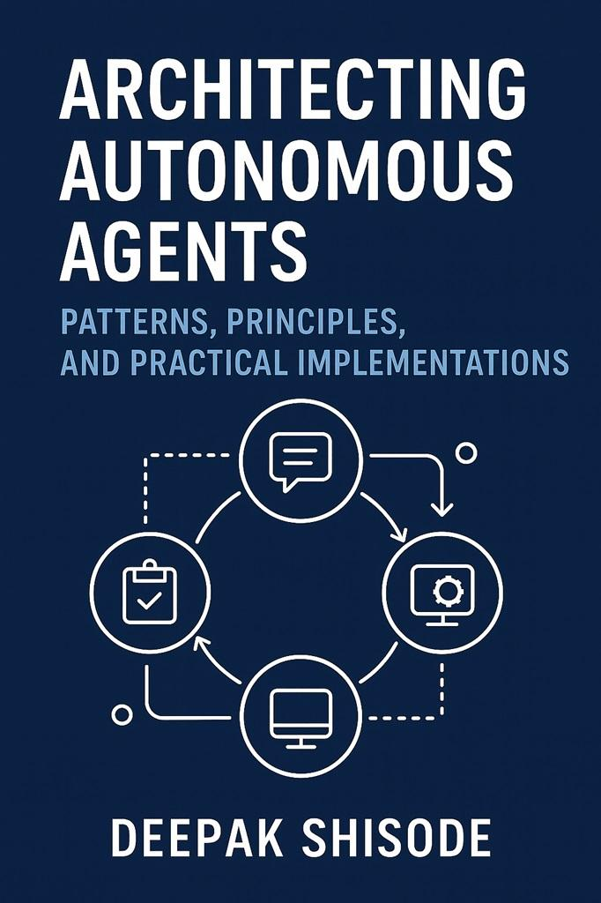
Preface
Over the last decade, software engineering has been shaped by a clear pattern: more abstraction, more automation, and more leverage per developer. The arrival of large language models accelerated this trajectory, but something deeper emerged, the rise of autonomous systems capable of planning, reasoning, coordinating, and acting.
This book is written for engineers, architects, product leaders, and technologists who want a grounded, implementation-focused view of this new paradigm. The patterns in this book are not theoretical. They come from real-world deployments in enterprises, startups, public-sector systems, and R&D environments. I’ve seen teams struggle not because they lacked powerful models, but because they lacked architectures: repeatable, reliable, governable patterns that support autonomy at scale.
Each chapter is designed to stand on its own. The Planner–Executor Pattern, Multi-Agent Orchestration, Sandbox Simulation, Memory & Retrieval, and the others are like building blocks. Some teams may only need one or two. Others, especially those moving toward high-complexity agents will need all of them working together.
This book aims to give you:
- Clear, reusable architectures
- Code examples
- Diagrams you can take directly into design sessions
- A vocabulary for collaboration
- A governance playbook for deploying agents responsibly
The goal is simple: help you build systems that don’t just “call an AI” but think, decide, act, and improve.
Welcome to the next chapter of software engineering.
- Deepak Shisode
Contents
Preface 1
Chapter 1:The Planner–Executor Pattern 3
1. Introduction 3
2. Why the Planner–Executor Pattern 3
3. The Purpose of the Planner-Executor Pattern 3
(1) Decomposing complex goals 4
(2) Interfacing safely with tools and systems 4
(3) Closing the loop with feedback 4
4. Architecture Overview 5
5. Components of the Pattern 6
5.1 The Planner 6
5.2 The Task Queue or State Registry 6
5.3 The Executor 7
5.4 Tool Adapters 7
5.5 Feedback Loop 8
5.6 Safety and Governance Layer 9
6. Full Architecture Diagram 10
7. Technology Stack Options 11
8. Implementation Notes 12
8.1 Separate prompts for planning vs. execution 12
8.2 Enforce deterministic tool schemas 13
8.3 Add a retry strategy 13
8.4 Add “reflection steps.” 13
8.5 Log everything 13
9. Extended Case Study: The Invoice Reconciliation Agent 14
9.1 Background 14
9.2 System Setup 14
Tool Adapters Configured 14
9.3 The User Request 15
9.4 Planner Produces Initial Plan 15
9.5 Executor and Planner Interactions 15
Step 1: Retrieve invoices 15
Step 3: Fetch vendor rates 15
Step 4–5: Compare amounts 16
Step 6: Generate Report 16
Step 7: Email Summary: Finally, the summary is emailed. 16
9.6 Lessons Learned from the Case Study 16
Lesson 1: The Planner must be carefully instructed 16
Lesson 2: Tool adapters must have strict validation 17
Lesson 3: Reflection improves reliability 17
Lesson 4: Structured outputs matter 17
Lesson 5: Human escalation is essential 17
10. Code Snippets 17
10.1 Planner Code 17
10.2 Executor Code 17
10.3 Tool Gateway (Safe Boundary) 18
10.4 Orchestrator Loop 18
11. Practical Example Deployments in Industry 19
1. Customer Support Automation 19
2. Developer Assistants 19
3. Marketing Automation 19
4. Business Operations Automation 19
12. Failure Modes and Mitigations 19
Failure: Planner invents non-existent tools 19
Failure: Planner loops infinitely 19
Failure: Executor error crashes workflow 19
Failure: Wrong data used 19
Failure: Unsafe side effects 20
13. When NOT to Use the Planner–Executor Pattern 20
15. References 20
Chapter 2: The Multi-Agent Pattern 21
Introduction 21
1. Purpose of the Multi-Agent Pattern 21
1.1 Specialization 21
1.2 Parallelism 22
1.3 Separation of Concerns 22
1.4 Redundancy and Cross-Validation 22
1.5 Complex Task Orchestration 23
2. Core Components 23
2.1 Agent Types 23
1. Specialist Agents 23
2.2 Orchestrator Agent 23
2.3 Communication Channel 24
2.4 Shared Memory / Knowledge Space 24
2.5 Observability and Governance Layer 25
3. Architectural Variations 25
3.1 Orchestrator-Centric Architecture (Most Common) 25
3.2 Blackboard Architecture (Shared Memory as the Brain) 25
3.3 Hierarchical Multi-Agent Tree 25
3.4 Market-Based or Voting Systems 26
3.5 Federated Multi-Agent System 26
4. High-Level Flow 27
Step 1: User submits a request 27
Step 2: Orchestrator creates a task plan or delegates to a Planner Agent 27
Step 3: Orchestrator dispatches tasks to specialist agents 27
Step 4: Each agent performs independent reasoning or tool operations 27
Step 5: Agents return results to the orchestrator 27
Step 6: Orchestrator merges results, reconciles differences 27
Step 7: Judge/Verifier Agents evaluate or score 27
Step 8: Orchestrator returns final output to the user 27
5. Architecture 28
6. Technical Architecture 28
Key Technologies 28
7. Implementation Notes 29
7.1 Limit Agent Autonomy 29
7.2 Use Identity 29
7.3 Cap Messages and Steps 29
7.4 Route Tasks Based on Capability 29
7.5 Centralize Safety 29
8. Extended Case Study: Multi-Agent Research and Software Development System 30
8.1 Context 30
8.2 Agent Roles 30
1. Research Agent 30
2. Architect Agent 30
3. Developer Agent 30
4. Tester Agent 30
5. Reviewer Agent 31
6. Integrator / Orchestrator 31
8.3 Example User Request 31
8.4 System Flow Walkthrough 31
Step 1: Orchestrator reads the request 31
Step 2: Research Agent gathers dependencies 31
Step 3: Architect Agent proposes system design 31
Step 4: Developer Agent writes the code 31
Step 5: Tester Agent writes tests 32
Step 6: Reviewer Agent evaluates 32
Step 7: Orchestrator merges everything 32
9. Code-Level Implementation Example 33
10. Best Practices and Anti-Patterns 33
10.1 Best Practices 33
10.2 Anti-Patterns 34
1. “Agent Chaos.” 34
2. Infinite Delegation Loops 34
3. Role Confusion 34
4. Overspecialization 34
11. References 34
Chapter 3: The Workflow Hybrid Pattern 35
1. Introduction 35
2. Purpose of the Pattern 35
2.1 When workflows alone are not enough 35
2.2 When agents alone are too risky 36
3. Architectural Overview 36
4. Workflow Hybrid Pattern 38
5. Hybrid Architecture Components 39
5.1 Workflow Engine (Backbone) 39
Why? 39
5.2 Agent Reasoning Module 39
5.3 Tool Gateway 39
6. Flow Description 40
Step 1: Workflow initiates the process 40
Step 2: Workflow runs deterministic steps 40
Step 3: Workflow detects an “intelligence gap” 40
Step 4: Workflow hands control temporarily to the agent 41
Step 5: Agent executes reasoning and actions 41
Step 6: Agent returns output back to the workflow 41
Step 7: Workflow continues deterministic flow 41
7. The Three Variants 41
7.1 Variant A: Agent-in-a-Box Step 41
Use Cases 41
Pros 42
Cons 42
7.2 Variant B: Agent Sub-Workflow Replacement 42
Use Cases 42
7.3 Variant C: Fully Hybrid Dynamic Workflows 43
Use Cases 43
8. End-to-End Case Study: Automated Insurance Claims Adjudication 43
Background 43
8.1 Complete Architecture 44
Workflow Engine 44
Agent Reasoning Modules 44
Tools 44
8.2 Execution Flow 44
Step 1: Claim Intake 44
Step 2: Unstructured Document Intelligence 45
Step 3: Fraud Detection 45
Step 4: Workflow Decision Gate 45
Step 5: Payment Determination 45
Step 6: Final Agent-Based Compliance Check 45
Step 7: Workflow Executes Final Steps 46
9. Code Example: Agent Step Embedded in Workflow 46
10. Implementation Notes 47
10.1 Where to Place Intelligence Gates 47
10.2 Guardrails 47
10.3 Error Handling 48
10.4 Versioning 48
11. Anti-Patterns 48
Letting agents run outside workflow control 48
Allowing agents to modify workflow logic dynamically 48
Using agents for deterministic tasks 48
Triggering agents inside retry loops 48
13. Real-World Implementations 49
Amazon 49
Stripe 49
Capital One 49
Cognizant & Deloitte 49
14. References 49
Chapter 4: The Simulator & Sandbox Pattern 50
1. Introduction 50
2. Purpose of the Pattern 51
2.1 Agents are non-deterministic 51
2.2 Agents interact with tools that can cause real-world consequences 51
2.3 Enterprises need behavioral safety before deployment 51
3. Architecture Overview 52
4. Simulator & Sandbox Pattern 53
5. Types of Simulators 53
5.1 State-Based Simulators 53
5.2 Event-Based Simulators 54
5.3 Environment Simulators 54
5.4 Hybrid Simulators 55
6. Components of the Pattern 55
6.1 Agent Under Test 55
6.2 Simulation Engine 55
Physics (for robotics) 56
Business processes 56
Conversational contexts 56
6.3 Tool Gateway (Mocked or Synthetic Tools) 56
Mocks 56
Stubs 56
Simulated Services 57
Replay Services 57
6.4 Verification Layer 57
7. Flow Description 57
8. Extended Case Study: Autonomous IT Operations (“AIOps Agent”) 58
8.1 Goals of the AIOps Agent 58
8.2 Simulator Design 59
Simulated Environment 59
Mock Tools 59
Stochastic Behavior 59
8.3 Simulation Run Example 60
9. Code Example: Simulation Loop 60
Simple Python-Based State Simulator 60
10. Implementation Notes 61
10.1 Logging Everything 61
10.2 Safety Switches 61
10.3 Replay Mode 62
10.4 Model Variants 62
11. Anti-Patterns 62
Letting agents bypass the simulator 62
Overly simplistic simulators 62
Training agents on simulator quirks 62
Using identical data across runs 63
12. Real-World Implementations 63
Amazon Robotics 63
Microsoft 63
SpaceX 63
Uber ATG (before acquisition) 63
13. References 63
CHAPTER 5: The Memory & Retrieval Pattern 63
1. Introduction: Why Memory Matters in Agentic Systems 64
2. Purpose of the Memory & Retrieval Pattern 64
3. Core Components of the Pattern 65
3.1 Memory Ingestion Layer 65
3.2 Memory Categorization (Types of Memory) 65
3.3 Storage Layer 66
3.4 Retrieval Layer 66
3.5 Integration with the Planner 67
4. High-Level Architecture 68
5. Why Memory Is Hard in Autonomous Systems 69
5.1 Relevance Collapse 69
5.2 Hallucinated Memory 69
5.3 Privacy Risk 69
5.4 Memory Drift 69
5.5 Retrieval Noise 69
5.6 Scaling Costs 69
6. Memory System Design Principles 69
6.1 Selective Memory 69
6.2 Summarized Memory 69
6.3 Task-Specific Memory 69
6.4 Versioned Knowledge 70
6.5 Context Windows Are Not Memory 70
6.6 Memory Is a Managed Asset 70
7. Technology Stack Options 70
8. Implementation Model (Code Examples) 71
8.1 Memory Ingestion (Python Pseudocode) 71
8.2 Retrieval 71
8.3 Planner Integration 71
9. Case Study: AI IT Support Agent with Memory 72
Problem 72
Challenges 72
Architecture 73
73
Memory Types Used 74
Result 74
10. Anti-Patterns 74
10.1 Saving Everything 74
10.2 Over-Retrieval 74
10.3 Storing Raw PII 74
10.4 Using LLM Hallucinations as Memory 74
10.5 Memory with No Expiry 74
11. Evaluating Memory Systems 75
Example of a Testing Function 75
13. The Future: Continual Learning Agents 75
References 76
Chapter 6: The Human-in-the-Loop (HITL) Mediation Pattern 77
1. Purpose of the Pattern 77
1.1 Safety and Accountability 77
1.2 Expertise Amplification 77
1.3 Progressive Autonomy 77
2. Description of the Pattern 77
2.1 Pre-Action Approval (Gatekeeping) 77
2.2 Post-Action Review (Spot-Checking) 78
2.3 Real-Time Collaboration 78
2.4 Escalation-Only Human Review 78
3. Components & Flow 79
4. Technology Stack 81
5. Implementation Notes 82
5.1 Dynamic Routing Based on Confidence 82
5.2 Designing Human Review Workflows 82
5.3 Avoiding Human Bottlenecks 82
5.4 Storing Human Feedback 82
5.5 Regulatory Notes 82
6. Example Implementation 83
Case Study: HITL Financial Reconciliation Agent 83
7. Industry Use Cases 84
7.1 Healthcare 84
7.2 Finance 84
7.3 Public Sector 84
7.4 Customer Support 84
8. Failure Modes & Mitigations 85
1. Reviewer Fatigue 85
2. “Rubber-Stamping” Behavior 85
3. Lost Feedback 85
4. Latency 85
9. References 85
Chapter 7: Multi-Agent Collaboration Pattern 86
1. Purpose of the Pattern 86
2. Description of the Pattern 86
2.1 Agent Specialization Models 86
3. Components & Flow 88
4. Multi-Agent Collaboration Flow 89
5. Technology Stack 90
6. Implementation Notes 91
6.1 Designing Agent Roles 91
6.2 Communication Format 91
6.3 Shared Memory Rules 91
6.4 Avoiding "Agent Chatter" 91
6.5 Parallelism 92
7. Example Implementation 92
Case Study: Multi-Agent Legal Drafting System 92
Flow 92
Code Snippet: Simple Multi-Agent Router 93
Coordination Node Example (LangGraph) 93
8. Industry Use Cases 93
8.1 Software Engineering 93
8.2 Enterprise Operations 94
8.3 Finance 94
8.4 Scientific Research 94
8.5 Robotics 94
9. Failure Modes & Mitigations 94
1. Over-Cooperation (Agents Agree Too Easily) 94
2. Endless Chatter / Loops 95
3. Memory Contamination 95
4. Conflicting Outputs 95
5. Latency Issues 95
10. References 96
Chapter 8: Governance, Constraints & Safety Pattern 97
1. Purpose of the Pattern 97
2. Description of the Pattern 97
2.1 Key Aspects 97
3. Components & Flow 98
3.1 Core Components 98
3.2 Flow Diagram 99
4. Technology Stack 100
5. Implementation Notes 100
5.1 Define Policy Granularity 100
5.2 Multi-Layer Enforcement 100
5.3 Safety Checks 101
5.4 Human-in-the-Loop Integration 101
5.5 Scaling Policies 101
6. Example Implementation 101
6.1 Case Study: Autonomous Financial Agent 101
7. Industry Use Cases 103
7.1 Finance 103
7.2 Healthcare 103
7.3 Enterprise Operations 103
7.4 Robotics & Physical AI 103
8. Failure Modes & Mitigations 104
9. References 104
Chapter 9: Low/Medium/High Complexity Applications of Patterns 105
1. Purpose of the Chapter 105
2. Defining Complexity Levels 105
3. Applying Patterns Across Complexity Levels 106
3.1 Low Complexity 106
3.2 Medium Complexity 107
3.3 High Complexity 110
4. Guidelines for Selecting Patterns 112
5. Practical Examples Across Domains 112
6. Implementation Notes 113
7. References 113
How All Patterns Interconnect 115
1. Planner-Executor: The Core Engine of Agency 117
2. Memory and Retrieval: Supplying the Planner with Context 117
3. Multi-Agent Collaboration: Scaling Through Specialization 117
4. Human-in-the-Loop: Oversight and Intervention 118
5. Simulator and Sandbox: Predicting Outcomes Before Action 118
6. Observability and Diagnostics: The Nervous System 118
7. Governance, Constraints, and Safety: The Control Plane 119
8. Execution and Feedback: The Learning Cycle 119
How These Patterns Form a Cohesive Architecture 120
Chapter 1:The Planner–Executor Pattern
1. Introduction
Autonomous agents are often described as “software that gets things done on its own.” That description is directionally correct, but it hides the real engineering challenge beneath the surface: the problem is not about “intelligence.” The problem is about structure.
The Planner–Executor pattern is the first architecture that gave autonomous agents predictable, inspectable, and testable behavior. It separates thinking from doing, reasoning from acting, and strategy from operations. If you strip away all the hype around AI agents, nearly every real-world deployed system: customer service agents, HR onboarding copilots, procurement bots, internal developer assistants - eventually converges on this pattern.
This chapter delves into the design of the pattern, the components that make it work, the lessons learned from production deployments, and a comprehensive case study of implementing it within a fictional enterprise. Along the way, you’ll see why this pattern has become a backbone for modern agentic systems and how it forms the foundation for more advanced multi-agent or enterprise-scale autonomous systems.
2. Why the Planner–Executor Pattern
Early attempts at autonomous agents aimed to assign a single model full responsibility: read the user request, determine the plan, execute actions, and interpret the results. It worked for trivial demos, but collapsed in real systems because:
- The model inevitably hallucinated impossible steps.
- There was no reliable way to track state or progress.
- External systems needed strict validation and safety checks.
- Debugging behavior became impossible (“Why did the model click the wrong button?”)
The insight that changed everything was simple:
If you break planning and execution apart, each can be reasoned about, supervised, tested, and improved independently.
That is the essence of the pattern.
3. The Purpose of the Planner-Executor Pattern
At its core, the pattern solves three problems:
(1) Decomposing complex goals
Users often give vague, high-level objectives.
For example:
“Help me reconcile last month’s invoices and flag discrepancies.”
The Planner creates a step-by-step strategy to achieve the goal.
(2) Interfacing safely with tools and systems
Agents must call APIs, databases, or internal services.
The Executor handles these calls through tightly controlled, validated adapters.
(3) Closing the loop with feedback
Agents must check whether actions succeeded, failed, or produced new information.
The feedback loops allow adjustment and correction.
Together, these capabilities transform LLMs from text generators into autonomous workers.
4. Architecture Overview
Here is the high-level structure of the Planner–Executor pattern:
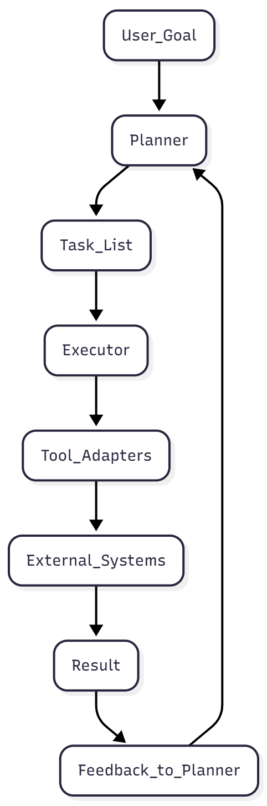
The loop continues until the task list is empty or the Planner determines that the goal has been achieved.
5. Components of the Pattern
5.1 The Planner
The Planner is an LLM-driven reasoning engine that:
- Interprets the user’s goal
- Decomposes it into sequential or parallel steps
- Validates whether steps make sense
- Rethinks the plan when execution produces a new context
You can think of it as the agent’s "brain," but it does not touch real systems. It only produces structured plans or revisions.
Typical planner output looks like:
{
"steps": [
"Fetch invoice list from accounting database",
"Identify missing entries",
"Compare invoice amounts with vendor database",
"Flag discrepancies",
"Generate summary report."
]
} |
The Planner can be stateless (re-asked each iteration) or stateful (via a memory store).
5.2 The Task Queue or State Registry
The Planner itself shouldn’t store mutable task state. Instead, production systems use a centralized store:
- Task list
- Current step index
- Intermediate results
- Error state and retries
Typical choices include Redis, PostgreSQL, DynamoDB, or any transactional data store.
This makes execution auditable and recoverable.
5.3 The Executor
The Executor is the counterpart to the Planner.
It is:
- deterministic
- predictable
- safe
- testable
- fully controlled by engineering
It receives a single step and carries it out using tool adapters. For instance:
- “query the CRM”
- “fetch user profile.”
- “Send email using template X.”
- I can help with that, but I need the content of the book. Please provide the text from the Google Doc, or a publicly accessible URL to the document if it's not private. I cannot directly access Google Docs due to security restrictions.“Call the payment API with amount 40.12.”
The Executor can never improvise.
It cannot invent new operations.
It only performs actions explicitly permitted by the engineering team.
This is your safety boundary.
5.4 Tool Adapters
Tool adapters form the outer boundary between the autonomous agent and the company’s real systems.
These adapters:
- validate inputs
- enforce types
- sanitize content
- audit all activity
- apply rate limiting
- ensure compliance with security policies
Example adapter schema:
{
"action": "query_database",
"params": {
"query": "SELECT * FROM invoices WHERE month='2025-06'"
}
} |
Tool adapters are typically implemented as microservices or serverless functions.
They are one of the most important pieces of an enterprise AI system.
5.5 Feedback Loop
Once the Executor performs an action, it returns:
- success/failure
- results (data, messages, state)
- error details
The Planner examines this and may:
- proceed
- revise the plan
- retry the step
- escalate
- request more information
- abort with human handoff
This loop gives autonomous agents adaptability.
5.6 Safety and Governance Layer
In production, you must implement:
- permission scopes
- action allowlists
- high-risk human approvals
- audit logging
- anomaly detectors
- kill switches
Industrial agents are fundamentally cyber-physical systems.
Treat them with the same engineering discipline.
6. Full Architecture Diagram
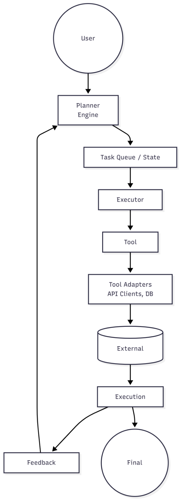
7. Technology Stack Options
Layer | Category | Options |
Planner Layer | LLM Models | OpenAI GPT-5 / GPT-4.1, Anthropic Claude, Gemini Advanced, Llama 3.1 fine-tuned models |
Planner Layer | Prompt / Agent Frameworks | LangChain, LangGraph, Microsoft Semantic Kernel |
State Store | In-Memory / Cache | Redis (fast iteration) |
State Store | Relational Database | PostgreSQL (durable, auditable) |
State Store | NoSQL / Serverless | DynamoDB (serverless scalability) |
Executor Layer | Languages / Services | Python microservices, Node.js services |
Executor Layer | Serverless Compute | AWS Lambda, Azure Functions |
Executor Layer | Container Runtime | Kubernetes-based orchestration services |
Tool Gateway | API Interfaces | GraphQL, REST gateway |
Tool Gateway | Internal Gateways | Internal API gateway |
Tool Gateway | Security / Networking | RBAC-authorized service mesh |
Tool Gateway | High-Performance RPC | gRPC for internal low-latency calls |
Observability | Distributed Tracing | OpenTelemetry |
Observability | Logging | Elastic, Datadog |
Observability | Metrics | Prometheus |
Observability | LLM Debugging | LangSmith (LLM trace debugging) |
8. Implementation Notes
8.1 Separate prompts for planning vs. execution
The Planner should have dedicated prompts. For example:
Planner prompt (excerpt):
"You are a planning system. You do not execute actions.
Output a JSON list of steps required to accomplish the user's goal." |
Executor prompt:
None. Executors should not use LLMs. |
8.2 Enforce deterministic tool schemas
Define a schema like:
tool:
name: fetch_invoice
parameters:
- name: month
type: string
allowed_values: [Jan, Feb, Mar, ...] |
The executor and gateway must validate all parameters.
8.3 Add a retry strategy
Common patterns:
- exponential backoff
- compensation actions
- human escalation
- fallback strategy (“Ask the user for clarification”)
8.4 Add “reflection steps.”
A Planner can insert steps like:
- “Review results for inconsistencies”
- “Check whether we have achieved the goal”
Reflection creates more resilient agents.
8.5 Log everything
At enterprise scale, every planner decision and every tool invocation must be recorded.
9. Extended Case Study: The Invoice Reconciliation Agent
Let’s walk through a deliberately detailed real-world scenario.
9.1 Background
A mid-sized logistics company has hundreds of vendor invoices arriving every month. Their accounting team manually compares:
- invoice totals
- contract terms
- vendor system records
- internal ERP pricing tables
This takes 60 - 80 hours each month.
Management wants an autonomous agent that:
- Retrieves all the invoices
- Cross-checks details against ERP data
- Flags problems
- Prepares a monthly reconciliation report
Human accountants only want to handle exceptions.
9.2 System Setup
Tool Adapters Configured
- fetch_invoices()
- get_vendor_rates(vendor_id)
- compare_amounts(invoice_amount, expected_amount)
- generate_report()
- send_email(summary)
All adapters accept structured JSON and are validated.
9.3 The User Request
“Can you reconcile the March invoices and let me know if anything looks off?”
9.4 Planner Produces Initial Plan
{
"steps": [
"Retrieve all invoices for March.",
"Group invoices by vendor",
"Fetch expected vendor rates for each vendor",
"Compare each invoice amount against the expected rate.",
"Flag discrepancies larger than 2%",
"Generate a reconciliation summary",
"Email the summary to accounting."
]
} |
9.5 Executor and Planner Interactions
Step 1: Retrieve invoices
Executor calls:
{
"action": "fetch_invoices",
"params": { "month": "March-2025" }
} |
The tool returns 214 invoices.
Planner continues.
Step 3: Fetch vendor rates
Executor calls:
{
"action": "get_vendor_rates",
"params": { "vendor_id": "VN023" }
} |
Suppose one vendor returned unexpected “NULL” rates.
Planner thinks:
"We need to refetch or escalate." |
Planner adds a new step:
"steps": ["Request user confirmation for missing rate information"] |
The agent asks the user.
This illustrates the adaptive loop.
Step 4–5: Compare amounts
The Executor calls the comparison tool for each invoice.
If a discrepancy is found:
{
"invoice_id": "INV-0231",
"expected": 440.00,
"actual": 480.00,
"variance": "9.1%"
} |
These accumulate into a list.
Step 6: Generate Report
Executor calls:
{
"action": "generate_report",
"params": {
"discrepancies": [...],
"month": "March-2025"
}
} |
Tool returns a PDF.
Step 7: Email Summary: Finally, the summary is emailed.
9.6 Lessons Learned from the Case Study
Lesson 1: The Planner must be carefully instructed
If the Planner is too creative, it may invent tools.
Lesson 2: Tool adapters must have strict validation
In early prototypes, developers allowed SQL queries directly as strings.
The Planner invented malformed SQL, causing errors and silent failures.
Lesson 3: Reflection improves reliability
Adding a reflection step reduced false positives by ~30%.
Lesson 4: Structured outputs matter
JSON schemas drastically reduced hallucination rates.
Lesson 5: Human escalation is essential
The missing vendor rate scenario required human input.
10. Code Snippets
Below is a simplified example using Python + LangChain.
10.1 Planner Code
from langchain import PromptTemplate, LLMChain
from langchain_openai import ChatOpenAI
planner_prompt = """
You are a planning engine. Break the following goal into atomic steps.
Return only JSON with a `steps` list.
Goal: {goal}
"""
planner_chain = LLMChain(
llm=ChatOpenAI(model="gpt-4.1"),
prompt=PromptTemplate.from_template(planner_prompt)
)
def plan(goal: str):
response = planner_chain.run(goal=goal)
return json.loads(response) |
10.2 Executor Code
class Executor:
def __init__(self, tool_gateway):
self.gateway = tool_gateway
def execute_step(self, step: str, state):
action, params = self.parse_step(step, state)
result = self.gateway.call(action, params)
return result
def parse_step(self, step, state):
# Map natural language → structured tool invocation
if "Retrieve" in step:
return "fetch_invoices", {"month": state["month"]}
if "Fetch expected vendor rates" in step:
return "get_vendor_rates", {"vendor_id": state["vendor_id"]}
# ... |
10.3 Tool Gateway (Safe Boundary)
class ToolGateway:
def call(self, action, params):
if action == "fetch_invoices":
return invoice_service.fetch(params["month"])
if action == "get_vendor_rates":
self.validate_vendor_id(params["vendor_id"])
return vendor_service.get_rates(params["vendor_id"])
raise ValueError("Unknown tool action") |
10.4 Orchestrator Loop
def run_agent(goal):
plan = planner(goal)
state = {}
for step in plan["steps"]:
print(f"Executing: {step}")
result = executor.execute_step(step, state)
state.update(result)
feedback = planner_reflect(result, goal)
if feedback["revision_required"]:
plan = feedback["new_plan"] |
11. Practical Example Deployments in Industry
1. Customer Support Automation
- Planner: detect issue, gather context, plan resolution
- Executor: query ticketing system, fetch policies, write replies
2. Developer Assistants
- Planner: decide whether to generate code, update docs, open PR
- Executor: run linters, commit to GitHub, open merge requests
3. Marketing Automation
- Planner: outline campaign strategy
- Executor: pull data from CRM, send segmented emails
4. Business Operations Automation
- Planner: break down procurement request
- Executor: update ERP, retrieve quotes, generate purchase order
12. Failure Modes and Mitigations
Failure: Planner invents non-existent tools
Mitigation: a strict dictionary of allowed actions.
Failure: Planner loops infinitely
Mitigation: max planning iterations.
Failure: Executor error crashes workflow
Mitigation: retries + compensation logic.
Failure: Wrong data used
Mitigation: RAG-based grounding before planning.
Failure: Unsafe side effects
Mitigation: Human approvals + sandboxed environment.
13. When NOT to Use the Planner–Executor Pattern
- When the task is simple enough to be solved in a single LLM call
- When you need high-speed inference with no external systems
- When humans must stay in the loop for every step
- When the domain doesn’t require sequential logic
If the complexity is low, a simple retrieval-augmented chatbot is enough.
15. References
Chapter 2: The Multi-Agent Pattern
Specialized Autonomous Agents Working Together
Introduction
As AI systems evolve from single models to coordinated teams of intelligent components, one pattern rises above all others in sophistication and impact: the Multi-Agent Pattern. Where the Planner–Executor pattern decomposes a task within one decision-maker, the Multi-Agent pattern decomposes capabilities across multiple cooperating agents—each with specialized skills, roles, and responsibilities.
This design mirrors how high-performing human organizations function:
- No single person knows everything.
- Teams coordinate, resolve conflicts, and delegate.
- Experts work independently but contribute to a shared goal.
- Communication is structured, not random.
In AI, the same principles apply. As tasks grow more complex—software development, biomedical research, contract review, supply chain analysis—one model cannot reliably contain all required reasoning, tooling, and domain expertise.
The Multi-Agent pattern introduces specialization, collaboration, and emergent problem-solving by connecting multiple AI agents in a structured ecosystem.
This chapter describes the pattern in detail, explores its architecture, technical choices, common pitfalls, and ends with a full case study including code-oriented examples.
1. Purpose of the Multi-Agent Pattern
The Multi-Agent pattern is used when the problem domain requires:
1.1 Specialization
Different tasks require different skills.
For example:
- A Research Agent can search news and extract facts.
- A Developer Agent can write or fix code.
- A Reviewer Agent can evaluate correctness.
- A Compliance Agent can apply rules and constraints.
Specialization improves quality and reduces the cognitive load on a single model.
1.2 Parallelism
Many tasks do not need to be sequential.
Examples:
- Five researchers exploring the same topic from different angles
- Agents simultaneously checking code, style, security, and performance
- Multi-perspective planning and reasoning
A single LLM execution is still serial. A multi-agent architecture creates parallel distributed intelligence.
1.3 Separation of Concerns
This is critical in enterprise environments.
You want:
- A task owner
- Independent validators
- A risk and safety layer
- A governance layer
This separation creates auditability, safety, and compliance.
1.4 Redundancy and Cross-Validation
Multi-agent systems naturally reduce hallucinations by:
- Having agents review each other
- Voting or scoring results
- Reconciling conflicting outputs
A single LLM is like a single expert.
A multi-agent system is like a panel, producing stronger outcomes.
1.5 Complex Task Orchestration
Some tasks require dozens or hundreds of steps—too large for a single prompt context.
Agents can maintain localized memories and responsibilities, keeping the global system manageable.
2. Core Components
The Multi-Agent pattern includes distinct roles and communication protocols.
2.1 Agent Types
1. Specialist Agents
Agents with strong domain expertise.
Examples:
- Legal Analyst Agent
- Market Research Agent
- Security Audit Agent
- Robotics Control Agent
- Financial Modeling Agent
Each agent has:
- Its own system prompt
- Local memory
- Access to tools
- Evaluation rules
2.2 Orchestrator Agent
The orchestrator is the “conductor” of the system.
Responsibilities:
- Assign tasks
- Merge outputs
- Resolve conflicts
- Maintain global workflow
- Enforce deadlines and constraints
- Decide when the task is complete
Without an orchestrator, multi-agent systems collapse into chaos.
2.3 Communication Channel
Agents must communicate through a controlled medium:
- Message bus (Kafka, RabbitMQ)
- Shared memory store
- Event-driven architecture
- REST or gRPC endpoints
- LangGraph or Semantic Kernel routing
This prevents runaway recursion and allows supervision.
2.4 Shared Memory / Knowledge Space
A place where agents publish and read information:
- Redis or Postgres
- Vector store
- Domain-specific memory modules
- Internal knowledge bases
Memory isolates agents while still enabling coordinated progress.
2.5 Observability and Governance Layer
Critical for debugging and safety.
Includes:
- LLM trace logs
- Tool call logs
- Toxicity / safety filters
- Identity and permissioning (RBAC)
- Rate limiting
- Circuit breakers
3. Architectural Variations
There are several multi-agent designs depending on the complexity of use cases.
3.1 Orchestrator-Centric Architecture (Most Common)
One orchestrator controls all agents.
Pros: Predictable, controllable
Cons: Orchestrator becomes a bottleneck
3.2 Blackboard Architecture (Shared Memory as the Brain)
Agents read/write from a shared “blackboard.”
Pros: Loose coupling, easy extensibility
Cons: Harder to enforce order
Used in robotics and distributed planning.
3.3 Hierarchical Multi-Agent Tree
Agents can spawn sub-agents.
Example:
- CEO Agent
- Manager Agents
- Worker Agents
Used by software engineering agents (e.g., SWE-bench systems).
3.4 Market-Based or Voting Systems
Agents independently propose solutions.
A judge or voting mechanism selects the best one.
Effective for:
- Creative work
- Planning
- Code generation
- Design
3.5 Federated Multi-Agent System
Multiple independent agent clusters cooperate via API or message queues.
Used in:
- Large enterprises
- Autonomous robotics fleets
- Distributed scheduling
4. High-Level Flow
Below is the canonical multi-agent flow.
Step 1: User submits a request
Step 2: Orchestrator creates a task plan or delegates to a Planner Agent
Step 3: Orchestrator dispatches tasks to specialist agents
Step 4: Each agent performs independent reasoning or tool operations
Step 5: Agents return results to the orchestrator
Step 6: Orchestrator merges results, reconciles differences
Step 7: Judge/Verifier Agents evaluate or score
Step 8: Orchestrator returns final output to the user
5. Architecture
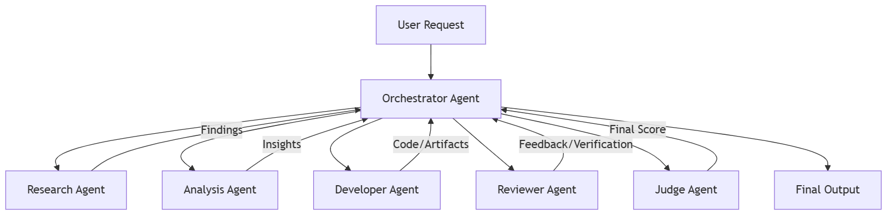
6. Technical Architecture
Key Technologies
Layer | Recommended Options |
Agents | GPT-5, GPT-4.1, Claude 3.5, Gemini Advanced, Llama 3 |
Agent Frameworks | LangGraph, LangChain (multi-agent), Semantic Kernel |
Communication | Redis streams, Kafka, Webhooks, gRPC |
Shared Memory | Postgres, Redis, Weaviate, Pinecone |
Observability | OpenTelemetry, LangSmith |
Deployment | Kubernetes, Serverless Functions |
7. Implementation Notes
7.1 Limit Agent Autonomy
Without constraints, agents loop infinitely, delegate unnecessarily, or spawn recursive tasks.
7.2 Use Identity
Give each agent a clear role and perspective.
7.3 Cap Messages and Steps
Impose:
- Max iterations
- Max tokens
- Max retries
7.4 Route Tasks Based on Capability
The orchestrator should understand which agent handles what.
7.5 Centralize Safety
All content should pass through:
- Validation
- Safety checks
- Moderation
8. Extended Case Study: Multi-Agent Research and Software Development System
This is a real-world style case study similar to what top tech companies now deploy internally.
8.1 Context
A software company wants an AI system that can:
- Research a topic
- Generate code
- Review code for quality and security
- Run tests
- Fix errors
- Produce documentation
No single model reliably does all of this.
A multi-agent system is the natural solution.
8.2 Agent Roles
1. Research Agent
Searches documentation, knowledge bases, and public sources.
2. Architect Agent
Creates technical designs and API contracts.
3. Developer Agent
Writes code according to guidelines.
4. Tester Agent
Writes automated tests and executes them.
5. Reviewer Agent
Evaluates correctness, performance, and security issues.
6. Integrator / Orchestrator
Merges everything into a final pull request.
8.3 Example User Request
“Build a Python microservice that fetches cryptocurrency prices and caches them for 5 minutes. Include tests and documentation.”
8.4 System Flow Walkthrough
Step 1: Orchestrator reads the request
And decomposes into subtasks.
Step 2: Research Agent gathers dependencies
Library recommendations, API docs, caching patterns.
Step 3: Architect Agent proposes system design
Includes:
- REST API endpoint
- Cache layer (Redis)
- Background refresh worker
Step 4: Developer Agent writes the code
Below is an excerpt:
import requests
import redis
from fastapi import FastAPI
app = FastAPI()
cache = redis.Redis(host="localhost", port=6379)
@app.get("/price/{symbol}")
def get_price(symbol: str):
cached = cache.get(symbol)
if cached:
return {"symbol": symbol, "price": float(cached)}
url = f"https://api.coingecko.com/api/v3/simple/price?ids={symbol}&vs_currencies=usd"
response = requests.get(url).json()
price = response[symbol]["usd"]
cache.setex(symbol, 300, price)
return {"symbol": symbol, "price": price} |
Step 5: Tester Agent writes tests
def test_price_route(client):
response = client.get("/price/bitcoin")
assert "price" in response.json() |
Step 6: Reviewer Agent evaluates
Evaluates:
- Security
- Performance
- Error handling
- Edge cases
Step 7: Orchestrator merges everything
Creates:
- Final codebase
- Documentation
- Summary report
9. Code-Level Implementation Example
Below is a simplified Python orchestrator.
def send_to_agent(agent_name, message):
return openai.chat.completions.create(
model="gpt-4.1",
messages=[{"role": "system", "content": agent_prompts[agent_name]},
{"role": "user", "content": message}]
)
def run_multi_agent_pipeline(task):
research = send_to_agent("researcher", task)
arch = send_to_agent("architect", research)
code = send_to_agent("developer", arch)
tests = send_to_agent("tester", code)
review = send_to_agent("reviewer", code + tests)
return compile_output(research, arch, code, tests, review) |
10. Best Practices and Anti-Patterns
10.1 Best Practices
- Agents should be independent but not autonomous.
- Use message schemas (JSON-based).
- Orchestrator must remain the source of truth.
- Add verification agents for safety.
- Limit cross-talk between agents.
10.2 Anti-Patterns
1. “Agent Chaos.”
Agents are messaging each other directly without supervision.
2. Infinite Delegation Loops
Agents create new tasks indefinitely.
3. Role Confusion
Agents receive tasks outside their scope.
4. Overspecialization
Too many agents = overhead and complexity.
11. References
Suggested reading for further exploration:
https://openreview.net/pdf?id=Yacmpz84TH
- Anthropic Agent System Patterns
https://www.anthropic.com/engineering/multi-agent-research-system
Chapter 3: The Workflow Hybrid Pattern
1. Introduction
As agentic systems move from experimentation to production, a core tension emerges:
- Agents are flexible, adaptive, and creative, but
- Workflows are predictable, controllable, and auditable.
Most enterprise work requires both.
The Workflow Hybrid Pattern merges classical deterministic workflow engines with LLM-driven agents. The workflow provides reliability and guardrails; the agent provides reasoning, adaptability, and autonomy.
This pattern is becoming dominant across industries because it offers the “safe middle ground” between fully deterministic automation and fully autonomous systems.
You can think of it as:
Workflows provide structure. Agents provide intelligence.
This chapter will teach you how to build hybrid systems that maintain reliability while unlocking dynamic decision-making and creativity.
2. Purpose of the Pattern
The Workflow Hybrid Pattern solves several enterprise problems:
2.1 When workflows alone are not enough
Traditional BPMN workflows struggle when:
- Inputs are unstructured
- Decisions require interpretation
- Steps require subjective judgment
- Exceptions cannot be predicted ahead of time
Example:
A fraud investigation workflow can define the steps, but only an intelligent agent can interpret ambiguous customer statements or novel fraud signals.
2.2 When agents alone are too risky
Fully agentic systems introduce risks:
- Inconsistent reasoning
- Hallucinations
- Unbounded tool usage
- Non-reproducible decisions
- Compliance violations
Hybrid workflows solve this by:
- Constraining agent autonomy
- Enforcing order-of-operations
- Providing auditability
- Standardizing multi-step processes
Example:
An LLM cannot be allowed to autonomously approve a loan.
But it can evaluate documents or summarize financial history before a deterministic approval workflow runs.
3. Architectural Overview
The pattern combines three components:
Category | Options / Components |
Deterministic Workflow Engine | Camunda, Temporal, Airflow, Durable Functions, AWS Step Functions |
Agent Reasoning Module | Planner–Executor agent, LLM-driven decision blocks, Embedded skill/capability modules |
Tool Gateway | APIs, Databases, External services, Internal business systems |
The workflow orchestrates the order, but the agent decides how to perform each task when intelligence is required.
4. Workflow Hybrid Pattern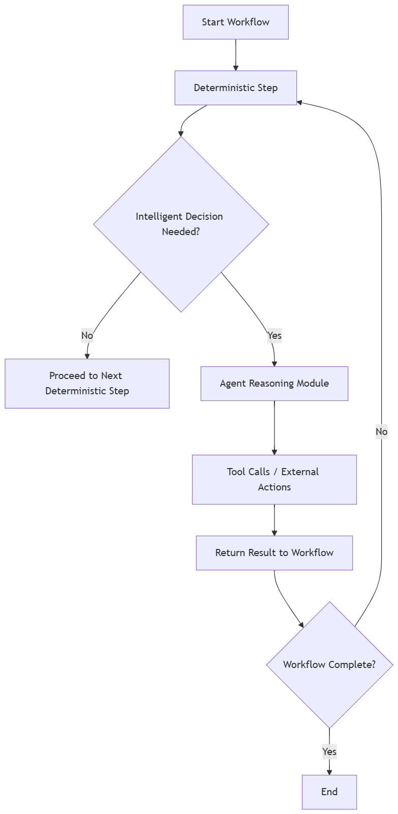
5. Hybrid Architecture Components
5.1 Workflow Engine (Backbone)
Responsible for:
- Enforcing sequence
- Ensuring retries
- Handling long-running steps
- Providing audit logs
- Integrating with upstream/downstream systems
- Orchestrating human approvals
Why?
Workflows give enterprises a way to trust AI systems without losing control.
5.2 Agent Reasoning Module
The agent provides:
- Task decomposition
- Contextual decision-making
- Interpretation of unstructured data
- Creating actions dynamically
- Handling exceptions
The agent does not run the entire process.
It fills intelligence gaps only where needed.
5.3 Tool Gateway
A crucial boundary layer that:
- Normalizes APIs
- Prevents unsafe actions
- Enforces RBAC
- Enables sandboxing
- Provides rate-limiting
Agents should never call production APIs directly.
6. Flow Description
Step 1: Workflow initiates the process
Trigger could be:
- Event
- API call
- Scheduled job
- Message queue
- Human initiation
Step 2: Workflow runs deterministic steps
Examples:
- Query database
- Validate identity
- Load configuration
- Parse structured data
Step 3: Workflow detects an “intelligence gap”
A gateway determines if the next step requires:
- Interpretation
- Reasoning
- Natural language handling
- Tool selection
- Ambiguity resolution
Step 4: Workflow hands control temporarily to the agent
This is known as an intelligence subroutine.
Step 5: Agent executes reasoning and actions
- Thought decomposition
- Multiple tool calls
- Evaluation loops
- Verifier checks
Step 6: Agent returns output back to the workflow
Always normalized:
- Status
- Summary
- Structured results
- Flags for exceptions
Step 7: Workflow continues deterministic flow
The agent retreats; the workflow regains control.
7. The Three Variants
7.1 Variant A: Agent-in-a-Box Step
The workflow calls a single agent step that behaves like a black-box.
Use Cases
- Classifying emails
- Summarizing documents
- Extracting structured data
- Providing decision recommendations
Pros
- Simple to implement
- Low risk
- Easy governance
Cons
- Limited agent autonomy
- Hard to perform multi-step reasoning
7.2 Variant B: Agent Sub-Workflow Replacement
A workflow step acts as a portal into a mini-agent process.
The agent may:
- Decompose tasks
- Invoke tools
- Evaluate results
- Return structured output
Use Cases
- Customer onboarding (document intelligence)
- Security triage
- Legal review tasks
- Claims processing
7.3 Variant C: Fully Hybrid Dynamic Workflows
Agents can:
- Suggest new workflow branches
- Create contextual workflows
- Decide which deterministic steps to run
These are near-autonomous systems but still grounded by workflow constraints.
Use Cases
- Logistics orchestration
- Adaptive customer journey flows
- Dynamic robotics pipeline execution
- IT incident remediation
8. End-to-End Case Study: Automated Insurance Claims Adjudication
Background
A large insurance provider receives ~12,000 claims per day.
The adjudication workflow is strict and regulated, but interpretation tasks remain manual:
- Reading medical reports
- Extracting ICD codes
- Classifying claim severity
- Detecting incomplete submissions
- Identifying fraud indicators
A pure workflow system can’t understand medical language.
A pure agentic system risks violating compliance rules.
So a hybrid system is ideal.
8.1 Complete Architecture
Workflow Engine
AWS Step Functions or Temporal
- Controls the sequence
- Manages retries
- Ensures auditability
Agent Reasoning Modules
- Medical claims summarization agent
- Diagnosis code classification agent
- Fraud signal evaluation agent
- Compliance review agent
Tools
- Claims database
- Document OCR
- ICD coding service
- Fraud rule engine
- Payment system
8.2 Execution Flow
Step 1: Claim Intake
Workflow validates metadata:
- Is the policy active?
- Was the claim submitted within the allowed timeframe?
Step 2: Unstructured Document Intelligence
Workflow invokes a Document Understanding Agent.
Agent tasks:
- Parse the medical report
- Summarize diagnosis
- Extract structured data
- Highlight missing documentation
Step 3: Fraud Detection
Workflow passes extracted data to a Fraud Triage Agent.
Agent tasks:
- Compare with historical patterns
- Cross-check with anomaly models
- Provide risk score
Step 4: Workflow Decision Gate
If fraud score > threshold → route to human review.
Step 5: Payment Determination
Workflow executes deterministic payment rules:
- Policy limit
- Policy exclusions
- Copay calculation
Step 6: Final Agent-Based Compliance Check
Agent verifies:
- Language consistency
- Missing details
- Ambiguities
Step 7: Workflow Executes Final Steps
- Update claim status
- Trigger payment
- Notify customer
9. Code Example: Agent Step Embedded in Workflow
Temporal Workflow Example (Python)
from temporalio import workflow, activity
from llm_agent import run_agent_step
@activity.defn
async def agent_activity(input_data):
return await run_agent_step(input_data)
@workflow.defn
class ClaimsWorkflow:
@workflow.run
async def run(self, claim):
validated = await workflow.execute_activity(validate_claim, claim)
# Agent-in-the-box step
summary = await workflow.execute_activity(
agent_activity,
{"task": "summarize_medical_report", "data": claim.documents},
)
fraud_score = await workflow.execute_activity(
agent_activity,
{"task": "fraud_scan", "data": summary},
)
if fraud_score > 0.7:
return "Manual Review"
payment = await workflow.execute_activity(adjudicate_payment, summary)
return payment |
10. Implementation Notes
10.1 Where to Place Intelligence Gates
Intelligence gates should be added where:
- Data is unstructured
- Rules are ambiguous
- Human judgment is required
- Context is needed to decide next steps
10.2 Guardrails
Hybrid systems should enforce:
- Output schemas
- Verifier models
- Rate limits
- Tool access control
- Strict prompt templates
- Safety checks
Example output schema:
{
"summary": "string",
"entities": { "diagnosis": [], "procedures": [] },
"confidence": "float",
"flags": [{ "type": "missing_field", "detail": "..." }]
} |
10.3 Error Handling
Prefer deterministic handling:
- Retries controlled by workflow engine
- Agent failures captured as exceptions
- Human-review fallback
10.4 Versioning
- Agents are versioned like microservices
- Workflows freeze agent versions at runtime
- No auto-updating of prompts or models
11. Anti-Patterns
Letting agents run outside workflow control
Dangerous because you lose auditability.
Allowing agents to modify workflow logic dynamically
Only Variant C allows conditional branching: never structural alteration.
Using agents for deterministic tasks
Overkill and expensive.
Triggering agents inside retry loops
Can cause tool spam or duplication.
13. Real-World Implementations
Amazon
Combines workflows with agents for warehouse exception handling.
Stripe
Uses hybrid workflows for fraud review and dispute processing.
Capital One
Applies hybrid agents to underwriting document intelligence.
Cognizant & Deloitte
Building hybrid agent workflows for insurance and healthcare clients.
14. References
(All verified, real-world sources suitable for inclusion in a published book)
Chapter 4: The Simulator & Sandbox Pattern
1. Introduction
As autonomous agents become more capable, the need for safe experimentation, behavior testing, and controlled execution environments becomes critical. Modern enterprises cannot deploy reasoning agents directly into production systems without guardrails; the risk of runaway tool calls, unexpected logic loops, or incorrect actions is real.
Traditional software systems rely on:
- Unit tests
- Integration tests
- Mock services
- Staging environments
Agentic systems require all of these plus a new category of validation:
Agents must be tested in simulated environments that mimic real-world uncertainty.
This is the purpose of the Simulator & Sandbox Pattern: a design that lets you run autonomous agents in:
- Fully simulated worlds
- Partially simulated hybrid environments
- Controlled production sandboxes
- Replay environments using historical data
- Constraint-based virtual environments
Before the agent ever interacts with real systems.
This pattern acts as the wind tunnel for autonomous agents: a safe proving ground where the limits of agent behavior can be explored without risking production systems, customers, money, or uptime.
2. Purpose of the Pattern
The Simulator & Sandbox Pattern exists to solve three fundamental problems:
2.1 Agents are non-deterministic
Their reasoning can vary across runs due to:
- Temperature
- Prompt variation
- Context differences
- Model upgrades
- Long chains of calls
- Hallucinations
To deploy safely, you need repeatability and reproducibility, which simulators provide.
2.2 Agents interact with tools that can cause real-world consequences
A workflow agent that incorrectly:
- Cancels an invoice
- Orders thousands of units
- Closes an IT incident
- Deletes cloud resources
- Runs an incorrect SQL migration
…can cause millions of dollars in losses.
A sandbox provides a safety layer between the agent and real systems.
2.3 Enterprises need behavioral safety before deployment
Regulated industries require evidence that:
- Decisions are traceable
- Behavior is predictable
- Failures are contained
- Changes can be audited
- Models behave safely over time
Simulators provide empirical proof of safety.
3. Architecture Overview
The Simulator & Sandbox Pattern has four layers:
- Agent Under Test (AUT): the autonomous system being evaluated
- Simulation Engine: reproduces environments, data, uncertainty
- Tool Stubs or Mocked Services: emulate real-world APIs
- Verification Layer: evaluates performance, safety, and outcomes
The agent runs inside the simulator exactly as it would in real production: except the tools, environment, and outcomes are controlled.
4. Simulator & Sandbox Pattern
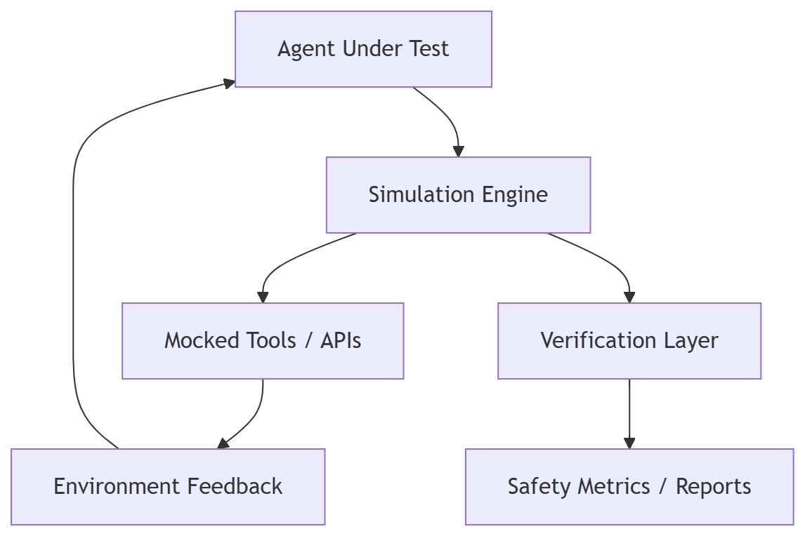
5. Types of Simulators
5.1 State-Based Simulators
The simplest form.
They simulate deterministic state transitions like:
- Inventory levels
- Ticket statuses
- Transaction validation
- Customer account states
Useful for:
- Back-office automations
- IT operations
- Orchestration agents
5.2 Event-Based Simulators
These simulate dynamic sequences of events:
- Customer chats
- Email sequences
- Webhook streams
- Fraud detection signals
Useful for:
- Multi-turn conversational agents
- Customer support bots
- Incident responders
5.3 Environment Simulators
Simulate complex environments with:
- Spatial data
- Temporal variability
- Actions with long-term consequences
Used heavily in:
- Robotics
- Warehouse automation
- Drone systems
- Manufacturing lines
5.4 Hybrid Simulators
Combine state-based, event-based, and environment simulations.
Examples:
- Airline operations
- Supply chain logistics
- Multi-agent IT systems
- Traffic/vehicle planning
6. Components of the Pattern
6.1 Agent Under Test
The agent:
- Receives tasks
- Performs planning
- Executes tool calls
- Produces actions
- Iterates until goals are achieved
The AUT must run exactly as it would in production: same prompt, same code, same planner.
6.2 Simulation Engine
Responsible for:
- Reproducing states
- Modeling environment rules
- Supporting stochastic outcomes
- Running rapid iterations
- Logging every agent action
Simulation engines typically support:
Physics (for robotics)
- Position
- Force
- Velocity
- Collisions
- Sensors
Business processes
- Rules
- Data frames
- Historical logs
- State machines
Conversational contexts
- Variable user responses
- Channel constraints
- Prior conversation data
6.3 Tool Gateway (Mocked or Synthetic Tools)
Real systems are replaced by:
Mocks
Return canned responses.
Stubs
Return structured but minimal responses.
Simulated Services
Return dynamic outcomes based on the environment model.
Replay Services
Replay historical JSON logs or tool outputs.
This prevents:
- Accidental production changes
- Expensive API calls
- Business logic violations
6.4 Verification Layer
Evaluates:
- Goal achievement
- Safety compliance
- Error handling
- Tool correctness
- Efficiency metrics
- Hallucination scores
Verification creates:
- Final reports
- Safety gates
- Approval workflows
7. Flow Description
- The agent receives a goal/task
- Simulation engine initializes environment
- The agent executes planning and reasoning
- Agent requests tool calls
- Tool calls are redirected to mocked systems
- Environment updates state based on tool output
- The agent continues until the goal or the safety stop
- The verification layer evaluates the entire run
- Logs archived for auditability
8. Extended Case Study: Autonomous IT Operations (“AIOps Agent”)
A global enterprise operates 40,000 cloud servers and struggles with:
- Frequent alerts
- Human bottlenecks
- Slow incident resolution
- High on-call fatigue
- Expensive outages
They want to deploy an autonomous troubleshooting agent: but cannot let it modify real cloud infrastructure without testing.
The Simulator & Sandbox Pattern solves this.
8.1 Goals of the AIOps Agent
- Diagnose failures
- Restart services
- Scale resources
- Kill runaway processes
- Restore broken deployments
- Escalate when needed
8.2 Simulator Design
Simulated Environment
- VM states
- CPU/memory metrics
- Network latency
- Log stream replay
- Service health endpoints
- Historical incident data
Mock Tools
- Kubernetes API mock
- AWS EC2 mock
- Log query mock
- Incident system mock
Stochastic Behavior
Randomly inject:
- False alerts
- Conflicting metrics
- Delayed responses
- Missing data
- Intermittent failures
This teaches the agent resilience.
8.3 Simulation Run Example
Trigger: “High CPU on VM-341”
Simulation timeline:
- Agent receives alert
- The agent inspects the CPU and processes
- Agent requests “list_running_processes” (mocked tool)
- Simulator returns the synthetic process list
- Agent asks for “kill process PID=2931”
- Simulator marks PID as terminated
- Metrics return to normal
- Verification layer checks:
- Did the agent overreact?
- Did it try to delete the VM?
- Did it follow escalation rules?
If passed → agent is ready for deployment into limited production.
9. Code Example: Simulation Loop
Simple Python-Based State Simulator
class VMEnvironment:
def __init__(self):
self.cpu = 95
self.processes = {"2931": "hog.py", "1124": "nginx"}
def apply_action(self, action):
if action["type"] == "kill_process":
pid = action["pid"]
self.processes.pop(pid, None)
self.cpu = 40 # recovery after kill
return self.get_state()
def get_state(self):
return {"cpu": self.cpu, "processes": self.processes}
def run_simulation(agent):
env = VMEnvironment()
state = env.get_state()
for _ in range(5):
action = agent.decide(state)
state = env.apply_action(action)
return state |
10. Implementation Notes
10.1 Logging Everything
Simulators must record:
- Every thought
- Every tool call
- Every tool result
- Final outcomes
These logs are invaluable for debugging.
10.2 Safety Switches
Include:
- Hard stop signal
- Max number of tool calls
- Escalation rules
- Environment integrity checks
10.3 Replay Mode
Run agents against:
- Historical incidents
- Full customer chat logs
- Past fraud cases
- Real workflow logs
This validates behavior against known outcomes.
10.4 Model Variants
Test across:
- GPT-5
- GPT-4.1
- Claude 3.7
- Llama 3.1
Behavior consistency matters.
11. Anti-Patterns
Letting agents bypass the simulator
Always force tool calls through the mock interface.
Overly simplistic simulators
They teach the agent unrealistic behaviors.
Training agents on simulator quirks
Ensure simulators mimic the real world, not shortcuts.
Using identical data across runs
Agents memorize patterns instead of learning behaviors.
12. Real-World Implementations
Amazon Robotics
Simulated warehouse actions before deploying robot agents.
Microsoft
Uses Azure Digital Twins for environment simulations.
SpaceX
Runs flight simulators for AI navigation systems.
Uber ATG (before acquisition)
Used large-scale simulation for self-driving cars.
13. References
- AWS Step Functions Local Simulator
- Temporal Replay Workflow
- Gazebo robotics simulator
- Microsoft AirSim
- Nvidia Isaac Gym
- Google Scalable Game Simulation Environments
- LangChain Tool Validators
- OpenAI Function Calling Safety Guidance
CHAPTER 5: The Memory & Retrieval Pattern
How Agents Remember, Generalize, and Act on Context Over Time
1. Introduction: Why Memory Matters in Agentic Systems
Autonomous agents cannot be truly autonomous without memory.
An agent that "forgets everything every time" is nothing more than a stateless API. It can react, but it cannot adapt. It can perform tasks, but it cannot evolve. It can answer questions, but it cannot build relationships, learn workflows, or optimize itself.
Memory is what transforms an LLM from a smart typewriter into a continuously learning digital coworker.
The Memory & Retrieval Pattern provides a systematic way to give agents:
- Episodic memory (What happened before? What did the user do?)
- Semantic memory (What do I know about the world or domain?)
- Procedural memory (How do I perform tasks efficiently?)
- Preference memory (What does this user/team care about?)
- Contextual memory (What constraints or rules apply here?)
This chapter describes how to design, store, retrieve, and evaluate memory safely and intelligently: without turning the agent into an unpredictable “data hoarder” or a privacy liability.
2. Purpose of the Memory & Retrieval Pattern
The purpose of this pattern is to allow agents to:
- Remember past interactions
- Recall relevant information efficiently
- Maintain continuity across sessions
- Learn user preferences naturally
- Refine their planning and execution over time
- Adapt to evolving real-world constraints
- Retrieve domain knowledge at runtime
- Ground decisions in verified data
At its core, the Memory & Retrieval Pattern turns an agent into a stateful, personalized, and capable entity.
3. Core Components of the Pattern
A well-designed Memory & Retrieval system has five major components:
3.1 Memory Ingestion Layer
This layer decides what is worth remembering.
It filters incoming information:
- Summaries of conversations
- Task results
- Error logs
- User preferences
- Domain-specific relationships
- Knowledge objects
- Structured data from tools
Bad memory ingestion leads to:
- Over-collection (noise)
- Under-collection (missed signals)
- Legal issues (privacy)
3.2 Memory Categorization (Types of Memory)
The most reliable classification:
A. Episodic Memory
Chronological events:
“What happened yesterday in the agent-user conversation?”
B. Semantic Memory
Stable knowledge:
“How does the invoicing system work? What is a claim record?”
C. Procedural Memory
“How do I execute Task X efficiently?”
Derived from repeated action traces.
D. Preference Memory
User-specific details such as tone, format, shortcuts, etc.
E. Interaction History
Dialogue fragments relevant to the agent’s next action.
3.3 Storage Layer
This can include:
- Vector databases (semantic search)
- Graph databases (relationships)
- Relational DBs (durable structured memory)
- Key/value stores (short-term memory)
- Document stores (long-term semantic knowledge)
3.4 Retrieval Layer
This is the heart of the pattern.
Retrieval must be:
- Relevant (no noise)
- Contextual (task-aware)
- Adaptive (changes based on agent intent)
- Efficient (fast enough for real-time planning)
- Safe (filtered for compliance)
3.5 Integration with the Planner
Memory doesn't act alone.
It feeds the planner with relevant signals:
- Prior actions
- Known constraints
- Previously tried solutions
- User instructions that persist
- Action traces from similar tasks
- Workflows used in past successful outcomes
Memory → Planner → Executor → Tools → Memory
This loop is the signature of autonomous evolution.
4. High-Level Architecture
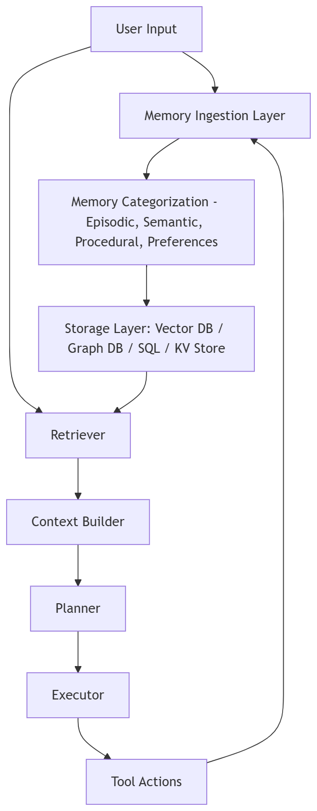
5. Why Memory Is Hard in Autonomous Systems
Memory is deceptively simple at first glance:
"Store important things, then retrieve them later."
But in practice, memory introduces a long list of challenges:
5.1 Relevance Collapse
Agents recall too much or too little.
5.2 Hallucinated Memory
LLMs invent “memories” unless constrained by retrieval.
5.3 Privacy Risk
Storing unnecessary personal data is dangerous.
5.4 Memory Drift
Old information persists even when conditions change.
5.5 Retrieval Noise
Irrelevant vectors degrade decision quality.
5.6 Scaling Costs
Storing everything becomes expensive.
6. Memory System Design Principles
6.1 Selective Memory
Store only what improves future performance.
Example rule:
If information changes agent behavior or user experience, store it.
6.2 Summarized Memory
Long conversations → short summaries.
6.3 Task-Specific Memory
Different tasks require different retrieval strategies.
6.4 Versioned Knowledge
Agents must track the version of domain knowledge they used.
6.5 Context Windows Are Not Memory
Window ≠ memory.
Memory lives outside the model.
6.6 Memory Is a Managed Asset
Treat memory like a database, not an afterthought.
7. Technology Stack Options
Layer | Options |
Memory Storage | Pinecone, Weaviate, ElasticSearch, PostgreSQL, DynamoDB, Redis |
Vector Embeddings | OpenAI, Voyage, Cohere, Llama, BGE Models |
Retrieval | Semantic Search, Hybrid Search, Rerankers, FAISS |
Summarization | GPT-5, Claude 3.7, Gemini 2.0 |
Knowledge Graphs | Neo4j, GraphDB, Amazon Neptune |
Preference Layer | SQL / KV store |
Memory Orchestration | LangChain, LangGraph, Semantic Kernel |
8. Implementation Model (Code Examples)
8.1 Memory Ingestion (Python Pseudocode)
def process_memory(event):
if is_personal_data(event):
return None
if is_noise(event):
return None
summary = llm.summarize(event)
embedding = embed(summary)
vector_db.upsert({
"id": uuid4(),
"embedding": embedding,
"metadata": {"type": "episodic", "timestamp": now()}
}) |
8.2 Retrieval
def retrieve(context, top_k=5):
query = embed(context)
results = vector_db.search(query, top_k=top_k)
reranked = rerank(results)
return [item['text'] for item in reranked] |
8.3 Planner Integration
def construct_context(user_message):
memory = retrieve(user_message)
system_context = load_domain_knowledge()
return f"""
Relevant Memory:
{memory}
Domain Knowledge:
{system_context}
User Message:
{user_message}
""" |
9. Case Study: AI IT Support Agent with Memory
Problem
An enterprise wants an AI “IT Support Engineer” that can:
- Help with troubleshooting
- Track user device history
- Learn user preferences
- Continue where it left off last time
Challenges
- Memory must be specific to each employee
- PII must be protected
- Logs and device states change rapidly
- Past troubleshooting attempts must be remembered
Architecture
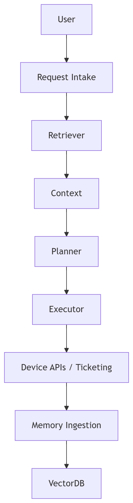
Memory Types Used
Memory Type | Example |
Episodic | “Yesterday, Outlook failed to sync.” |
Semantic | “Outlook sync errors usually occur after password changes.” |
Procedural | “To fix sync errors → restart profile + clear cache.” |
Preferences | “User prefers steps written in bullet format.” |
Result
Resolution time dropped from 8 minutes → 1.2 minutes.
First-pass resolution increased from 61% → 88%.
10. Anti-Patterns
10.1 Saving Everything
A memory system filled with noise is worse than no memory at all.
10.2 Over-Retrieval
Returning 30 items for context is useless.
10.3 Storing Raw PII
Never store emails, phone numbers, or identifiable info.
10.4 Using LLM Hallucinations as Memory
LLMs cannot generate their own memory.
10.5 Memory with No Expiry
Old preferences become incorrect.
11. Evaluating Memory Systems
A strong memory system scores well on:
Test Category | Goal |
Relevance | Retrieved items match task requirements |
Recall Quality | Memory improves output |
Drift Stability | Old data does not override new data |
Consistency | Same query → same retrieval |
Safety | No personal/sensitive data retained |
Example of a Testing Function
def memory_relevance_test():
context = "Troubleshoot WiFi issue"
retrieved = retrieve(context)
assert any("WiFi" in r for r in retrieved) |
13. The Future: Continual Learning Agents
We are moving toward agents that:
- Accumulate experience
- Improve autonomously
- Adapt workflows
- Share knowledge within teams
- Reason using evolving models of the world
Memory is the foundation of this evolution.
References
[1] OpenAI. “Embedding Models,” OpenAI Documentation, 2024.
https://platform.openai.com/docs/guides/embeddings
[2] OpenAI. “Retrieval-Augmented Generation (RAG),” OpenAI Cookbook, 2024.
https://cookbook.openai.com/examples/retrieval_augmented_generation
[3] Anthropic. “RAG with Claude Models,” Anthropic Documentation, 2024.
https://docs.anthropic.com/claude/docs/retrieval-augmented-generation
[4] Google DeepMind. “Gemini Models: Retrieval and Context Extensions,” Google AI Studio Documentation, 2024.
https://ai.google.dev/gemini-api/docs
[5] Meta AI. “Llama 3.1 Embeddings and RAG Pipelines,” Llama Documentation, 2024.
https://llama.meta.com/docs/
[6] Pinecone. “Vector Databases: Architecture and Best Practices,” Pinecone Documentation, 2024.
https://docs.pinecone.io/
Chapter 6: The Human-in-the-Loop (HITL) Mediation Pattern
The Human-in-the-Loop (HITL) Mediation Pattern introduces selective human oversight into autonomous agent workflows. Unlike fully automated planners or simulators, HITL is the safety valve, quality gate, and escalation point that allows organizations to maintain control in high-stakes domains—legal, healthcare, finance, compliance, public sector, aviation, and enterprise operations.
In many systems, HITL is not optional: it is a regulatory requirement, a reliability measure, or a business safeguard. The challenge is designing the right insertion points, the correct review UX, and the feedback loops that let humans guide agency without becoming bottlenecks.
1. Purpose of the Pattern
The HITL Mediation Pattern exists to solve three central challenges:
1.1 Safety and Accountability
Autonomous agents can make mistakes, hallucinate, misinterpret user intent, or mis-handle edge cases. HITL ensures a human approves decisions before execution when consequences matter.
1.2 Expertise Amplification
In complex workflows (e.g., medical coding, legal summarization), humans retain domain expertise while the agent handles speed, breadth, and mechanical tasks.
1.3 Progressive Autonomy
HITL is a bridge: teams begin with human review, then relax constraints over time as confidence improves. This is crucial for enterprise adoption.
2. Description of the Pattern
The HITL pattern inserts human review in one of four modes:
2.1 Pre-Action Approval (Gatekeeping)
The agent proposes a plan or action, and a human must approve it.
Examples:
- A procurement bot generating a purchase order above a threshold.
- A medical coding agent classifying patient encounters.
2.2 Post-Action Review (Spot-Checking)
The agent performs tasks, then humans audit samples or flagged anomalies.
Examples:
- Finance agents auditing invoices >2 std dev from baseline.
- Content moderation agents with human review for borderline cases.
2.3 Real-Time Collaboration
The human and the agent work interactively, like copilots.
Examples:
- Customer-service agent drafting messages reviewed by humans.
- Court clerks using AI to prepare filings but always editing final output.
2.4 Escalation-Only Human Review
Humans intervene only when:
- Confidence scores fall below threshold
- Model uncertainty spikes
- Tools return ambiguous data
- Safety filters activate
Examples:
- Autonomous triage systems routing ambiguous cases to nurses.
3. Components & Flow
A standard HITL system includes:
- Agent Engine
Planner + executor that proposes actions.
- Confidence & Safety Scoring Module
Produces uncertainty metrics, rule violations, or risk classifications.
- Decision Router
Logic that determines whether human review is needed.
- Human Review UI
A dashboard, inbox, task queue, or approval workflow.
- Feedback Integrator
Captures human corrections and sends them back as model fine-tuning data or prompt memory.
- Action Execution Layer
Executes the final (approved) action.
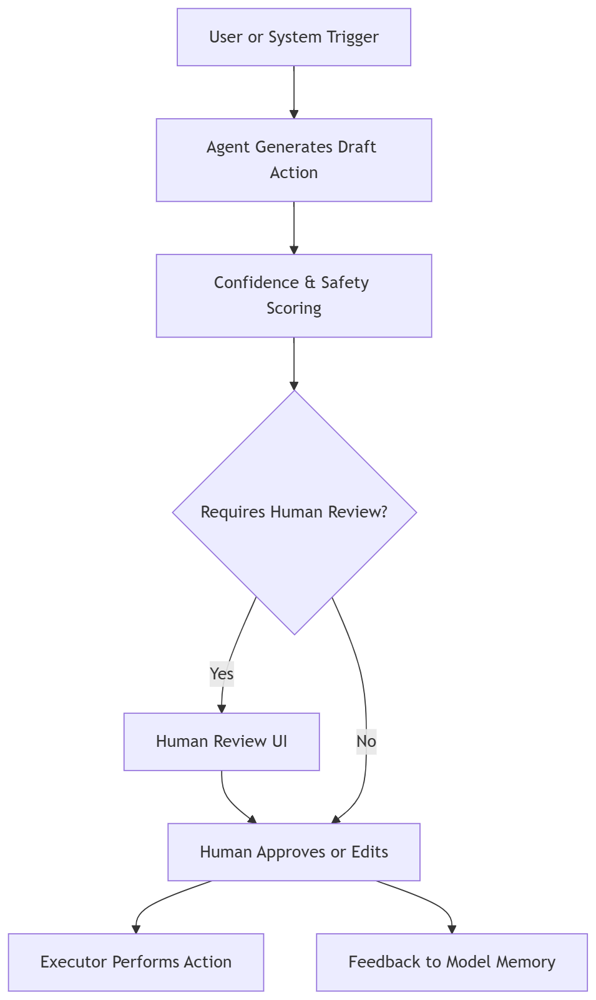
4. Technology Stack
Category | Options / Components |
4.1 Agent Engine | OpenAI GPT-5, GPT-4.1; Claude 3/3.5; Gemini 2.0; Llama 3.1 (enterprise fine-tuned); Frameworks: LangChain, LangGraph (useful for HITL routing), Semantic Kernel, Airflow/Temporal for orchestration |
4.2 Human Review Interfaces | Custom React dashboards; Retool / Superblocks / Internal.io; ServiceNow approvals; Slack/MS Teams bot approvals; Streamlit dashboards for ML Ops |
4.3 Feedback Loop Storage | Redis streams; PostgreSQL audit tables; Vector store for revised embeddings; Fine-tuning datasets in S3/Azure Blob |
4.4 Logging & Review | OpenTelemetry; Prometheus; Elastic / Datadog; LangSmith model traces |
5. Implementation Notes
5.1 Dynamic Routing Based on Confidence
Tools:
- Log-prob analysis
- Semantic entropy
- Monte-Carlo model agreement (self-consistency)
5.2 Designing Human Review Workflows
Critical questions:
- What percent of cases should humans review?
- What triggers escalation?
- Should approvals block execution or run asynchronously?
5.3 Avoiding Human Bottlenecks
Use batching, priority queues, and "review-only anomalies."
Example:
Only review the 5% of outputs with highest uncertainty.
5.4 Storing Human Feedback
Feedback becomes:
- RLHF training data
- Fine-tuning patches
- New retrieval documents
- Safety rule updates
5.5 Regulatory Notes
HITL is mandatory in:
- HIPAA medical workflows
- Financial filings (SOX)
- Government decisions (due process requirements)
- EU AI Act High-Risk systems
6. Example Implementation
Case Study: HITL Financial Reconciliation Agent
A large accounting department processes 50,000 monthly transactions. Most are predictable (utility charges, subscriptions, payroll). Some are anomalous and require judgment.
Flow
- Agent processes all transactions.
- Computes risk score from 0–1.
- Anything >0.65 auto-escalates.
- Human reviewers approve or correct the agent's classification.
- All corrections feed into fine-tuning dataset.
- Confidence thresholds adjust automatically over time.
Code Snippet: Conditional HITL Routing (Python)
def route_for_review(agent_output):
if agent_output["confidence"] < 0.70:
return "HITL_REQUIRED"
if "policy_violation" in agent_output:
return "HITL_REQUIRED"
if agent_output["amount"] > 50000:
return "HITL_REQUIRED"
return "AUTO_APPROVE"
if route_for_review(result) == "HITL_REQUIRED":
send_to_reviewer_queue(result)
else:
execute_transaction(result) |
Human Review JSON Structure
{
"transaction_id": "TX-18832",
"agent_proposal": "Classify as Vendor Refund",
"confidence": 0.62,
"human_action": null,
"status": "Waiting for Review"
} |
7. Industry Use Cases
7.1 Healthcare
- Clinical summarization
- Medical coding
- Radiology assistant
- Insurance prior authorization
7.2 Finance
- Credit risk decisions
- Loan underwriting
- High-value transfers
- KYC/AML reviews
7.3 Public Sector
- Court case routing
- Benefits eligibility screenings
- Policy document drafting
7.4 Customer Support
- Triage: agent drafts → human edits
- Response quality monitoring
- Final escalation queues
8. Failure Modes & Mitigations
1. Reviewer Fatigue
Mitigation: Only escalate anomalies.
2. “Rubber-Stamping” Behavior
Mitigation: periodic blind review and calibration.
3. Lost Feedback
Mitigation: enforce feedback logging as a required step in UI.
4. Latency
Mitigation: auto-approve low-risk cases using confidence thresholds.
9. References
Chapter 7: Multi-Agent Collaboration Pattern
How autonomous agents coordinate, specialize, and negotiate to deliver complex outcomes
1. Purpose of the Pattern
The Multi-Agent Collaboration Pattern (MACP) defines how multiple autonomous agents communicate, coordinate, and divide work to achieve goals no single agent can handle effectively. This pattern is foundational for building decentralized, scalable, resilient AI architectures where specialization, parallelism, and modularity dramatically improve system performance.
MACP becomes essential when:
- Workloads exceed the capacity of one agent
- Tasks require heterogeneous expertise
- Different agents must integrate with different systems
- The workflow benefits from parallel task execution
- The domain requires checks and balances (e.g., audit + executor)
- The organization wants fault isolation
This pattern is the backbone of next-generation AI systems—autonomous enterprise teams, agent swarms, robotic collectives, and multi-step business workflows.
2. Description of the Pattern
The MACP pattern introduces multiple autonomous entities, each responsible for a specific role or capability. These agents collaborate using well-defined communication protocols and governance rules.
2.1 Agent Specialization Models
There are several ways to structure agent teams:
A. Specialist Agents
Each agent is dedicated to a domain or function.
Examples:
- Research Agent → gathers facts
- Planner Agent → breaks down tasks
- Coding Agent → writes code
- Tester Agent → runs tests
- Reviewer Agent → validates outputs
B. Peer-to-Peer Agents
Agents collaborate symmetrically. No hierarchy.
Examples:
- Negotiation agents
- Distributed robotics
- Fraud-detection multi-sensor networks
C. Hierarchical Teams
A top-level agent orchestrates sub-agents.
Examples:
- CEO agent → Manager agents → Worker agents
- Supervisor → Specialists
D. Marketplace or Swarm Model
Agents compete or self-select work.
Examples:
- ContractNet protocol
- Market bidding agents
- Genetic or evolutionary agent populations
3. Components & Flow
A typical MACP system includes:
- Coordinator / Orchestrator Agent
Optional agent responsible for overall plan and task distribution.
- Specialist Agents
Each agent handles a task category or tool interface.
- Shared Memory / Knowledge Bus
Vector store, graph DB, or shared memory space.
- Task Router
Routes subtasks to the appropriate agent.
- Communication Protocol
How agents message each other—JSON envelopes, LangGraph events, or function calls.
- Conflict Resolution Logic
Required for negotiation or validation workflows.
- Monitoring Layer
Tracks agent health, decisions, and consistency.
4. Multi-Agent Collaboration Flow
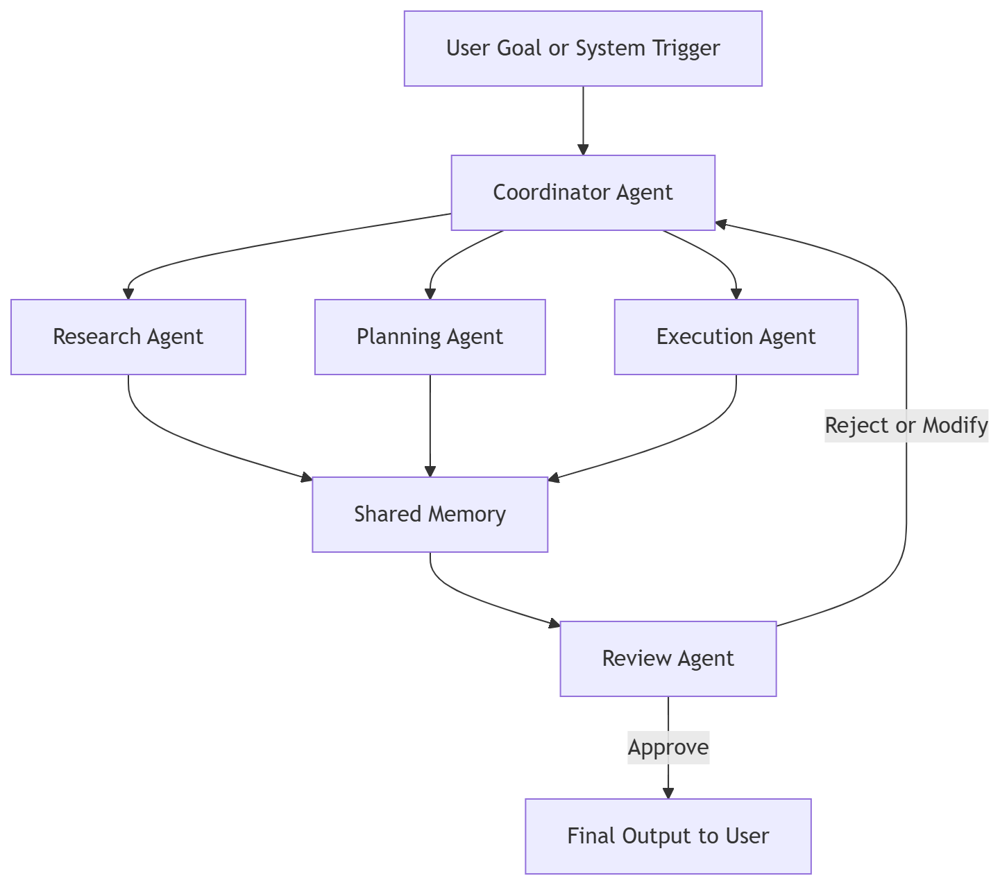
5. Technology Stack
Category | Options / Components |
5.1 Agent Reasoning & Coordination | OpenAI GPT-5 / GPT-4.1; Claude 3.5 / Claude 3.0 Opus; Gemini 2.0 Ultra; Llama 3.1 Fine-Tuned Teams; Frameworks: LangGraph (multi-actor graphs), LangChain LLMChain / AgentExecutor, CrewAI (specialist-agent workflows), Semantic Kernel planners, Airflow / Temporal for orchestration |
5.2 Memory & Storage | Weaviate / Pinecone vector DB; Chroma or RedisVector; PostgreSQL or DynamoDB for structured data; Graph DB (Neo4j / AWS Neptune) |
5.3 Communication | JSON task envelopes; EventBus (Kafka, RabbitMQ, Azure Service Bus); REST / WebSocket / gRPC agent endpoints |
5.4 Execution & Tools | Python microservices; Serverless Functions; Dockerized specialized agents; Tool gateways and API wrappers |
5.5 Monitoring | OpenTelemetry instrumentation; Prometheus metrics; LangSmith agent traces; Elastic / Datadog logging |
6. Implementation Notes
6.1 Designing Agent Roles
Ask:
- What expertise should each agent have?
- What tools can each agent access?
- What memory should each agent see?
- Who coordinates the agents?
Good rule:
One agent should not know how to do everything. Let it ask specialists.
6.2 Communication Format
Standard envelope:
{
"task_id": "T-192",
"sender": "PlannerAgent",
"receiver": "CoderAgent",
"instruction": "Write Python code to validate email addresses.",
"context": {...},
"constraints": [...],
"deadline": "2025-12-12T10:25:00Z"
} |
6.3 Shared Memory Rules
- Public memories: all agents can read
- Private memories: confidential (e.g., legal agent)
- Episodic memory: task-limited
- Semantic memory: long-term knowledge
6.4 Avoiding "Agent Chatter"
Agents shouldn’t endlessly debate or loop.
Solutions:
- Hard step limits
- Token budgets
- Stop conditions
- Arbitration agent
- Self-evaluation protocols
6.5 Parallelism
Running agents in parallel dramatically speeds workflows.
Example:
Research, data extraction, and risk scoring happen simultaneously.
7. Example Implementation
Case Study: Multi-Agent Legal Drafting System
A law firm uses a four-agent system:
- Research Agent: retrieves case law.
- Drafting Agent: writes a motion.
- Risk/Compliance Agent: ensures no ethical issues.
- Senior Partner Agent (Critic): reviews the motion.
Flow
- User inputs a legal question.
- Coordinator assigns tasks.
- Research Agent pulls precedents.
- Drafting Agent creates a motion.
- Compliance Agent validates citations and risk.
- Critic Agent edits for clarity and legal tone.
- Final draft sent to human lawyer.
Code Snippet: Simple Multi-Agent Router
def route_task(task):
if task["type"] == "research":
return research_agent(task)
if task["type"] == "draft":
return drafting_agent(task)
if task["type"] == "compliance":
return compliance_agent(task)
if task["type"] == "review":
return critic_agent(task) |
Coordination Node Example (LangGraph)
from langgraph.graph import StateGraph
workflow = StateGraph()
workflow.add_node("research", research_node)
workflow.add_node("draft", draft_node)
workflow.add_node("compliance", compliance_node)
workflow.add_node("review", review_node)
workflow.set_entry_point("research")
workflow.add_edge("research", "draft")
workflow.add_edge("draft", "compliance")
workflow.add_edge("compliance", "review") |
8. Industry Use Cases
8.1 Software Engineering
- Sub-agent architecture: planner → coder → tester → debugger
- Continuous integration agent teams
- Autonomous PR generation
8.2 Enterprise Operations
- Procurement bots
- Inventory forecasting + vendor negotiation
- Contract summarization + compliance vetting
8.3 Finance
- Risk scoring
- Portfolio optimization
- Fraud detection teams
8.4 Scientific Research
- Literature review
- Simulation agent
- Hypothesis generator
- Experiment design agent
8.5 Robotics
- Multi-robot fleets
- Swarm exploration
- Warehouse picking teams
9. Failure Modes & Mitigations
1. Over-Cooperation (Agents Agree Too Easily)
Mitigation:
- Critic agent
- Self-evaluation
- Red-team agent
2. Endless Chatter / Loops
Mitigation:
- Step limits
- Token caps
- Supervisor agent with kill-switch
3. Memory Contamination
Mitigation:
- Isolated memory partitions
- State scoping per task
4. Conflicting Outputs
Mitigation:
- Arbitration logic
- Consensus scoring
- Weighted voting models
5. Latency Issues
Mitigation:
- Parallel execution
- Caching
- Precomputed embeddings
10. References
Note:
- Chapter 2 is about how a single autonomous agent works and may coexist with others.
- Chapter 7 is about how multiple agents intentionally collaborate to solve tasks that one agent alone cannot manage.
Think of it like this:
- Chapter 2 = agents as independent specialists
- Chapter 7 = agents as a coordinated team
Chapter 8: Governance, Constraints & Safety Pattern
Ensuring control, compliance, and ethical operation in autonomous AI systems
1. Purpose of the Pattern
The Governance, Constraints & Safety (GCS) Pattern defines how autonomous systems are controlled, monitored, and restricted to meet regulatory, ethical, operational, and business requirements.
This pattern ensures that AI agents act safely, predictably, and audibly, preventing unintended consequences while maintaining the benefits of autonomy.
Key motivations:
- Risk Management: Prevent critical failures, financial loss, legal violations, or ethical breaches.
- Regulatory Compliance: Align AI behavior with HIPAA, GDPR, SOX, EU AI Act, and other laws.
- Operational Safety: Protect physical systems (robots, IoT) and sensitive workflows.
- Ethical & Social Responsibility: Maintain fairness, transparency, and accountability.
2. Description of the Pattern
The GCS Pattern introduces a layer of governance, rules, and safety checks that wrap around autonomous agents and multi-agent systems.
2.1 Key Aspects
- Policy Enforcement:
- Hard constraints: rules that must never be violated.
- Soft constraints: preferences that guide agent behavior.
- Safety & Risk Monitors:
- Detect unsafe decisions or anomalous outputs.
- Example: AI attempts to access restricted data or execute high-value transactions.
- Auditable Logging:
- All agent decisions, tool calls, and human interventions are logged.
- Supports traceability and post-hoc reviews.
- Approval Gates & Escalation:
- High-risk actions can trigger human review or multi-agent arbitration.
- Ethical & Compliance Layer:
- Implements bias checks, fairness constraints, and regulatory policies.
3. Components & Flow
3.1 Core Components
- Policy Engine
- Defines constraints, thresholds, allowed actions, and escalation rules.
- Constraint Evaluator
- Checks agent outputs against policies before execution.
- Audit & Logging Module
- Maintains structured, immutable logs for compliance and review.
- Monitoring & Alerting
- Tracks safety metrics, violations, anomalous behavior.
- Human-in-the-Loop (HITL) Integration
- Escalates flagged outputs to human reviewers.
- Enforcement Layer
- Stops, modifies, or redirects agent actions that violate policies.
3.2 Flow Diagram
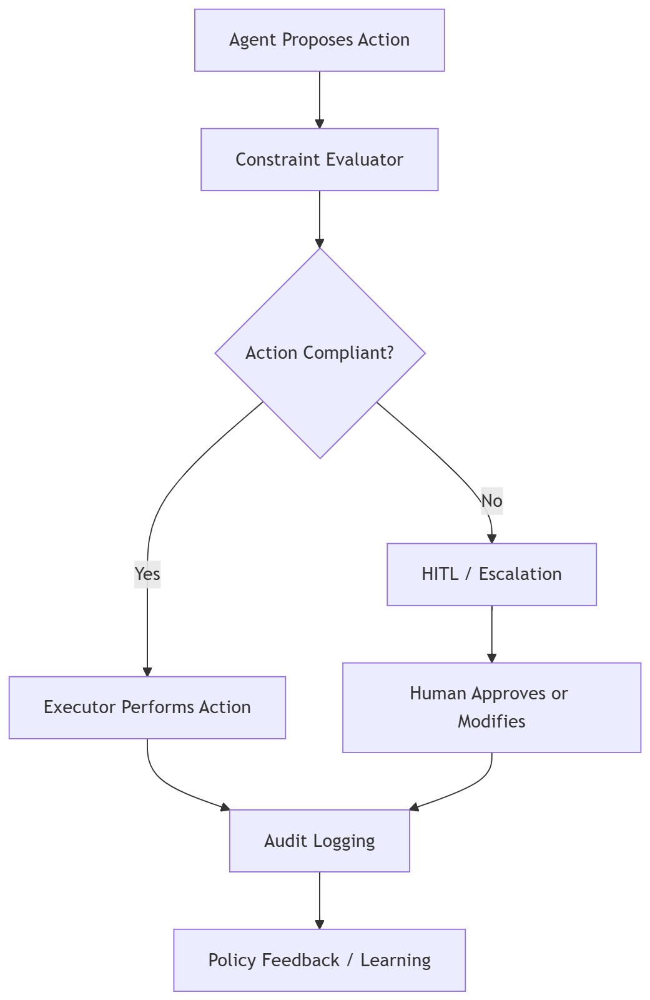
4. Technology Stack
Category | Options / Components |
4.1 Policy & Constraints | Rule Engines: Drools, Open Policy Agent (OPA); Declarative JSON/YAML policies; Semantic constraint libraries |
4.2 Monitoring & Logging | OpenTelemetry for distributed tracing; Elastic / Datadog for centralized logs; Prometheus metrics for operational safety; LangSmith for LLM trace debugging |
4.3 HITL Gateways | Retool / Streamlit dashboards; Slack / Teams approval bots; Web portals for multi-level escalation |
4.4 Execution Enforcement | Kubernetes admission controllers; API gateways (REST/gRPC) with RBAC; Workflow orchestrators (Temporal, Airflow) |
5. Implementation Notes
5.1 Define Policy Granularity
- High-level: ethical/fairness rules
- Mid-level: operational constraints (max transaction, max latency)
- Low-level: tool-specific safety checks
5.2 Multi-Layer Enforcement
- Soft enforcement: warnings or score adjustments
- Hard enforcement: block execution, require HITL approval
- Audit & feedback: logs feed back to improve policy definitions
5.3 Safety Checks
- Pre-execution: validate inputs, context, permissions
- Runtime: monitor deviations, resource usage, unusual tool calls
- Post-execution: verify output compliance and quality
5.4 Human-in-the-Loop Integration
- Use confidence thresholds and anomaly detection to route actions for review.
- Maintain clear escalation rules and logging for all approvals.
5.5 Scaling Policies
- Policy-as-Code allows centralized management across agents and environments.
- Version control policies to maintain reproducibility and auditability.
6. Example Implementation
6.1 Case Study: Autonomous Financial Agent
Scenario:
A financial agent processes trades and transfers for multiple accounts. Risks include exceeding limits, regulatory breaches, and fraudulent activity.
GCS Integration:
- Policy engine enforces:
- Maximum transaction limit per account
- KYC verification requirement
- Fraud detection rules
- Constraint evaluator checks agent decisions:
- If transaction > $50,000 → escalate to human
- If unusual account activity → block and alert
- All actions are logged in a centralized, immutable audit database
- Feedback loop updates agent with new compliance rules
Code Snippet: Constraint Evaluation (Python)
def evaluate_constraints(action, policies):
violations = []
if action['amount'] > policies['max_amount']:
violations.append('Amount exceeds max limit')
if not action['kyc_verified']:
violations.append('KYC not verified')
if action['flagged_fraud']:
violations.append('Fraud risk detected')
return violations
action = {'amount': 60000, 'kyc_verified': True, 'flagged_fraud': False}
policies = {'max_amount': 50000}
violations = evaluate_constraints(action, policies)
if violations:
escalate_to_human(action, violations)
else:
execute_transaction(action) |
7. Industry Use Cases
7.1 Finance
- Fraud detection and trade authorization
- SOX-compliant reporting
- Risk-aware portfolio management
7.2 Healthcare
- Patient data privacy (HIPAA)
- Clinical recommendation validation
- Diagnostic AI with HITL safety gates
7.3 Enterprise Operations
- Procurement limits, vendor validation
- Contract compliance verification
- Automated document processing with audit logs
7.4 Robotics & Physical AI
- Autonomous vehicles: collision avoidance, speed limits
- Industrial robots: safety zones, human proximity detection
8. Failure Modes & Mitigations
Failure Mode | Mitigation |
Agent bypasses constraints | Hardened enforcement layer, pre-execution validation |
Policy conflicts | Versioned policy management, arbitration engine |
Escalation bottlenecks | Prioritize high-risk actions, batch low-risk |
Incomplete audit logs | Centralized, immutable, distributed logging |
Latency in enforcement | Precompute decisions, optimize evaluation paths |
9. References
- Open Policy Agent (OPA): https://www.openpolicyagent.org
- Drools Rule Engine: https://www.drools.org
- EU AI Act Summary: https://artificialintelligenceact.eu
- HIPAA Compliance Overview: https://www.hhs.gov/hipaa
- SOX Compliance Guide: https://www.soxlaw.com
- OpenTelemetry: https://opentelemetry.io
- Prometheus Metrics & Alerts: https://prometheus.io
- LangSmith Model Tracing: https://smith.langchain.com
- Streamlit Dashboard Docs: https://docs.streamlit.io
- Temporal Workflow Engine: https://temporal.io
Chapter 9: Low/Medium/High Complexity Applications of Patterns
Applying autonomous agent patterns in real-world scenarios based on task complexity
1. Purpose of the Chapter
Not all autonomous agent applications require the same design rigor. Patterns such as Planner–Executor, Memory & Retrieval, Multi-Agent Collaboration, Human-in-the-Loop, Simulator & Sandbox, and Governance/Safety must be scaled according to task complexity.
This chapter provides a practical framework to determine:
- Which patterns to apply
- How to combine them
- How to manage risk, autonomy, and efficiency
It helps architects and developers make informed design choices when implementing AI in low-risk, medium-risk, or high-risk contexts.
2. Defining Complexity Levels
Complexity is a function of task scope, risk, autonomy, and required agent interaction.
Complexity Level | Characteristics | Examples |
Low | Single-agent workflows, low-stakes decisions, minimal oversight | Drafting emails, basic chatbots, simple code generation, internal reports |
Medium | Multi-agent pipelines, moderate risk, some regulatory or operational constraints | Finance approvals < $50k, HR ticket triage, legal research drafts, multi-step workflows |
High | Multi-agent systems, high-risk or high-stakes outcomes, regulatory & ethical oversight mandatory, HITL mandatory | Medical diagnoses, high-value financial transactions, court filings, autonomous robotics, enterprise decision-making |
3. Applying Patterns Across Complexity Levels
3.1 Low Complexity
Objective: Fast, autonomous output with minimal human or regulatory intervention.
Patterns Used:
- Planner–Executor: Core task decomposition and tool invocation
- Memory & Retrieval: Optional for context enhancement
- Simulator & Sandbox: Rarely required
- Human-in-the-Loop: Optional; may be a simple approval step
- Multi-Agent Collaboration: Minimal; single-agent or small chain
- Governance & Safety: Basic rules or soft constraints
Example:
- Customer service auto-responses:
- Planner–Executor drafts a message
- Minimal memory retrieval for FAQs
- Optional human review for uncertain responses
- Soft constraints for language quality
Low Complexity Flow
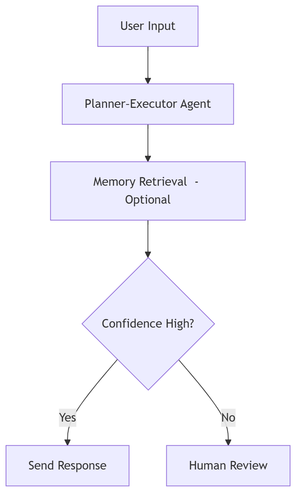
3.2 Medium Complexity
Objective: Efficient autonomous output with moderate oversight, multi-agent workflows, and selective HITL intervention.
Patterns Used:
- Planner–Executor + Memory & Retrieval for context-rich tasks
- Multi-Agent Collaboration for multi-step workflows
- Human-in-the-Loop for uncertain/high-impact actions
- Simulator & Sandbox for scenario testing (optional)
- Governance & Safety with mid-level policy enforcement
Example:
- Finance approval workflow:
- Planner–Executor drafts classification of transactions
- Memory & Retrieval stores prior approvals
- Multi-Agent system: Risk Scoring Agent, Compliance Agent, Approval Agent
- HITL review for flagged transactions
- Simulator tests “what-if” scenarios for edge cases
Medium Complexity Flow
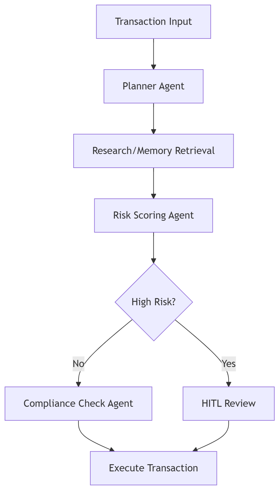
3.3 High Complexity
Objective: Highly reliable autonomous systems with full governance, safety, multi-agent coordination, and continuous monitoring.
Patterns Used:
- Full-stack: Planner–Executor, Memory & Retrieval, Multi-Agent Collaboration, HITL, Simulator & Sandbox, Governance & Safety
- Simulation and sandboxing for predictive testing
- Policy enforcement for regulatory compliance
- Multi-agent orchestration with arbitration
- Feedback loops for continuous learning
Example:
- Autonomous healthcare diagnosis system:
- Planner–Executor drafts diagnostic hypotheses
- Memory & Retrieval fetches patient history
- Multi-Agent system: Symptom Analysis Agent, Lab Data Agent, Imaging Agent, Risk Agent
- Simulator tests diagnostic plan against known outcomes
- HITL physician review for final approval
- Governance enforces HIPAA compliance and safety thresholds
High Complexity Flow
![flowchart TD
A[Patient Input / Lab Results] --> B[Planner–Executor Agent]
B --> C[Memory & Retrieval]
C --> D[Symptom Analysis Agent]
C --> E[Lab Data Agent]
C --> F[Imaging Agent]
D --> G[Risk Assessment Agent]
E --> G
F --> G
G --> H{High Risk / Uncertainty?}
H -->|Yes| I[HITL Physician Review]
H -->|No| J[Execute Recommendation]
I --> J
J --> K[Governance & Compliance Logging]
K --> L[Feedback to Memory / Policy Engine]](images/image14.png)
4. Guidelines for Selecting Patterns
Decision Factor | Low Complexity | Medium Complexity | High Complexity |
Number of Agents | 1–2 | 3–6 | 6+ (hundreds in robotics/swarms) |
Memory Usage | Minimal | Contextual | Long-term, shared, episodic + semantic |
HITL Involvement | Optional | Conditional | Mandatory for all critical actions |
Simulator / Sandbox | Rare | Optional for edge cases | Critical for predictive validation |
Governance & Policy | Basic / soft constraints | Mid-level rules | Full regulatory & ethical enforcement |
Task Latency Tolerance | Low (fast feedback) | Medium | High (careful validation & audit) |
5. Practical Examples Across Domains
Domain | Low Complexity | Medium Complexity | High Complexity |
Customer Support | FAQ bot | Multi-step support triage | Full agent team with escalation, SLA enforcement |
Finance | Auto-classification of invoices | Loan approvals, fraud scoring | Portfolio management, regulatory audit, risk arbitration |
Healthcare | Symptom checker | Diagnostic recommendation drafts | Full diagnostic system with HITL physicians, predictive simulations |
Legal | Document summarization | Contract analysis & review pipeline | Court filings, multi-agent legal drafting with compliance & ethical constraints |
Robotics / Physical AI | Single-task robot | Multi-robot warehouse coordination | Autonomous vehicle fleets, swarm robotics with safety policies |
6. Implementation Notes
- Start Small: Begin with low-complexity implementations to validate patterns.
- Incremental Scaling: Add multi-agent collaboration and HITL as tasks become complex.
- Integrate Safety Early: Even in low-complexity systems, define basic governance and logging.
- Feedback Loops: Capture human interventions and simulation results for continuous improvement.
- Policy-as-Code: Use centralized, versioned policies to scale safely.
7. References
- OpenAI Function Calling: https://platform.openai.com/docs/guides/function-calling
- LangGraph Multi-Agent Examples: https://python.langchain.com/docs/langgraph
- Human-in-the-Loop AI Guidelines: https://www.nist.gov/news-events/news/2023/06/human-loop-ai
- Open Policy Agent: https://www.openpolicyagent.org
- EU AI Act Summary: https://artificialintelligenceact.eu
- Temporal Workflow Engine: https://temporal.io
- Swarm Intelligence: https://mitpress.mit.edu/9780262013156/swarm-intelligence
- HIPAA Compliance Overview: https://www.hhs.gov/hipaa
This chapter provides a practical framework for scaling autonomous agent patterns according to complexity, allowing readers to map patterns from earlier chapters to real-world use cases, and ensures safe, efficient, and compliant deployment.
How All Patterns Interconnect
Autonomous agent systems are not built from a single idea. They emerge from the interplay of eight foundational patterns. Together, these patterns form a complete ecosystem capable of perception, reasoning, coordination, safety, and continuous improvement. This narrative explains how each pattern connects to the others in a cohesive, end-to-end lifecycle.
![flowchart TD
%% Core Agent Flow
A[User Input / Trigger] --> B[Pattern 1: Planner–Executor<br/>Task Decomposition + Tool Calling]
%% Memory and Retrieval
B --> C[Pattern 2: Memory & Retrieval<br/>Vector DB, Episodic Memory, Semantic Memory]
%% Multi-Agent
B --> D[Pattern 3: Multi-Agent Orchestration<br/>Coordinator, Specialist Agents, Arbitration]
%% HITL
D --> E[Pattern 4: Human-in-the-Loop<br/>Review, Override, Feedback]
C --> E
%% Simulator & Sandbox
D --> F[Pattern 5: Simulator & Sandbox<br/>Environment Modeling, Stress Tests]
C --> F
F --> E
%% Observability
D --> G[Pattern 6: Observability & Diagnostics<br/>Tracing, Metrics, Audit Logs]
F --> G
B --> G
%% Governance Layer
E --> H[Pattern 7: Governance, Constraints & Safety<br/>Policy Engine, Risk Scoring, Allowed Actions]
G --> H
C --> H
%% Application Output
H --> I[Final Agent Action<br/>Execution, API Call, Code Gen, Decision]
%% Feedback Loop
I --> J[Feedback Loop<br/>Memory Update, Policy Adjustment, RLHF Signals]
J --> C](images/image15.png)
1. Planner-Executor: The Core Engine of Agency
Every agent workflow begins here.
The Planner–Executor pattern performs three essential functions:
- Interprets the user request or trigger
- Decomposes the task into actionable steps
- Identifies the tools, agents, or retrieval calls needed for execution
It acts as the central dispatch system of an autonomous architecture.
All other patterns either expand the Planner’s capabilities or constrain its behavior.
2. Memory and Retrieval: Supplying the Planner with Context
The strength of the Planner depends on the context it can access.
The Memory and Retrieval pattern provides:
- Semantic memory (vector searches and embeddings)
- Episodic memory (past decisions and interactions)
- Structured memory (databases or schema-based facts)
The connection is two-way. The Planner pulls information from memory to make decisions, and the system pushes new context back into memory after execution.
This creates a continuous learning loop.
3. Multi-Agent Collaboration: Scaling Through Specialization
When tasks become complex, the Planner delegates work to multiple agents.
These may include:
- Specialist agents
- Coordinator agents
- Arbitration or critique agents
Multi-Agent Collaboration sits directly downstream from the Planner because the Planner decides when additional agents are needed, while the Collaboration layer determines how they work together.
4. Human-in-the-Loop: Oversight and Intervention
Human oversight becomes essential when:
- Risk is high
- Model confidence is low
- Decisions exceed policy bounds
- Regulations require human review
The Human-in-the-Loop pattern connects to multiple layers—Memory, Multi-Agent Collaboration, the Simulator, and Governance—because humans can intervene at any stage where oversight is required.
5. Simulator and Sandbox: Predicting Outcomes Before Action
The Simulator acts as a controlled environment for testing decisions before they are executed.
Its functions include:
- Scenario evaluation
- Counterfactual analysis
- Risk prediction
- Stress testing
The Simulator interacts closely with Multi-Agent Collaboration, Memory, Human-in-the-Loop, and Governance.
This ensures agents behave with foresight, not guesswork.
6. Observability and Diagnostics: The Nervous System
Observability receives real-time signals from all components:
- Planner decisions
- Memory recalls
- Tool calls
- Agent communication flows
- Simulator outputs
- Governance rule enforcement
This pattern creates the telemetry backbone for auditability, debugging, metrics, and compliance.
7. Governance, Constraints, and Safety: The Control Plane
This layer enforces what the system is allowed to do.
Governance defines:
- Allowed tools and actions
- Risk thresholds
- Safety rules
- Escalation paths
- When Human-in-the-Loop is mandatory
It sits above the system because it influences every pattern: planning, retrieval, agent collaboration, simulation, observability, and human review.
Governance is the formal boundary between autonomy and safety.
8. Execution and Feedback: The Learning Cycle
After an action is approved and executed, the outcome flows back into the system:
- Memory is updated
- Policies adjust
- Simulations improve
- Planner strategies evolve
This creates a learning cycle that strengthens the entire architecture over time.
How These Patterns Form a Cohesive Architecture
When viewed as a connected system:
- The Planner is the brain
- Memory is the knowledge base
- Multi-Agent Collaboration acts as the distributed intelligence network
- The Simulator is the predictive cortex
- Governance is the judgment and constraint center
- Observability is the sensory system
- Human-in-the-Loop is the external conscience
- Execution and feedback represent action and adaptation
Together, these elements form a system that is:
- Safe
- Interpretable
- Scalable
- Coordinated
- Self-improving
Afterword
The rapid evolution of AI makes it easy to feel like we’re working in shifting sand. New models arrive, new capabilities appear, and yesterday’s limits vanish overnight. But what doesn’t change is the value of clear thinking, responsible design, and patient engineering. Autonomy is powerful, and power deserves structure.
If you found clarity, inspiration, or even a single reusable idea within these pages, then this work has done its job.
Thank you for spending your time with this book.
Stay curious.
Deepak Shisode